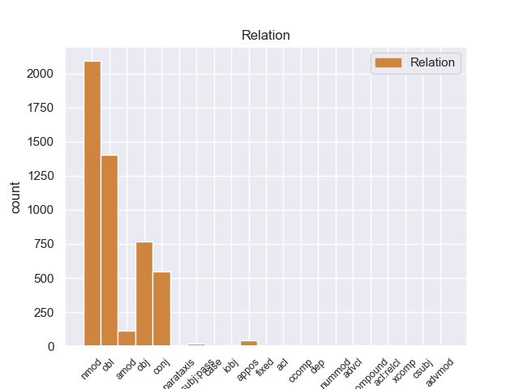
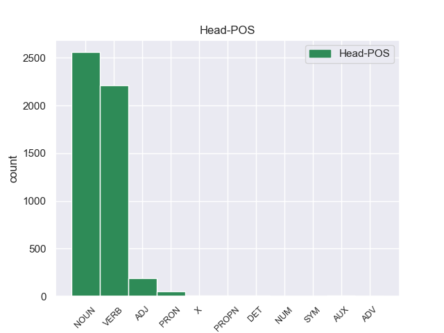
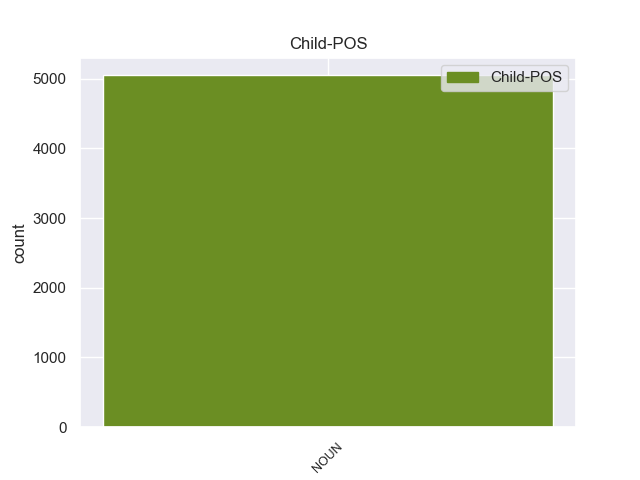

Distribution of features within this leaf



Agreement Rules sorted by frequency.
- When the dependent token is the nominal modifier(nmod) of the head token, and the head token is NOUN and the dependent token is NOUN.
1 Αυτό _ _ _ _ 0 _ _ _
2 μπορεί _ _ _ _ 0 _ _ _
3 να _ _ _ _ 0 _ _ _
4 μην _ _ _ _ 0 _ _ _
5 οδηγήσει _ _ _ _ 0 _ _ _
6 σ _ _ _ _ 0 _ _ _
7 τη _ _ _ _ 0 _ _ _
8 λήξη λήξη NOUN _ Gender=Fem|Number=Sing 0 _ _ _
9 του _ _ _ _ 0 _ _ _
10 εν _ _ _ _ 0 _ _ _
11 λόγω _ _ _ _ 0 _ _ _
12 ζητήματος ζητήματος NOUN _ Gender=Masc|Number=Sing 8 nmod _ _
13 αλλά _ _ _ _ 0 _ _ _
14 , _ _ _ _ 0 _ _ _
15 σ _ _ _ _ 0 _ _ _
16 τη _ _ _ _ 0 _ _ _
17 μορφή _ _ _ _ 0 _ _ _
18 υπό _ _ _ _ 0 _ _ _
19 την _ _ _ _ 0 _ _ _
20 οποία _ _ _ _ 0 _ _ _
21 την _ _ _ _ 0 _ _ _
22 λάβαμε _ _ _ _ 0 _ _ _
23 , _ _ _ _ 0 _ _ _
24 αυτή _ _ _ _ 0 _ _ _
25 η _ _ _ _ 0 _ _ _
26 αίτηση _ _ _ _ 0 _ _ _
27 άρσης _ _ _ _ 0 _ _ _
28 της _ _ _ _ 0 _ _ _
29 ασυλίας _ _ _ _ 0 _ _ _
30 ήταν _ _ _ _ 0 _ _ _
31 , _ _ _ _ 0 _ _ _
32 κατά _ _ _ _ 0 _ _ _
33 την _ _ _ _ 0 _ _ _
34 άποψη _ _ _ _ 0 _ _ _
35 της _ _ _ _ 0 _ _ _
36 Επιτροπής _ _ _ _ 0 _ _ _
37 Νομικών _ _ _ _ 0 _ _ _
38 Θεμάτων _ _ _ _ 0 _ _ _
39 , _ _ _ _ 0 _ _ _
40 απαράδεκτη _ _ _ _ 0 _ _ _
41 , _ _ _ _ 0 _ _ _
42 άποψη _ _ _ _ 0 _ _ _
43 την _ _ _ _ 0 _ _ _
44 οποία _ _ _ _ 0 _ _ _
45 συνιστώ _ _ _ _ 0 _ _ _
46 σ _ _ _ _ 0 _ _ _
47 το _ _ _ _ 0 _ _ _
48 Σώμα _ _ _ _ 0 _ _ _
49 να _ _ _ _ 0 _ _ _
50 υιοθετήσει _ _ _ _ 0 _ _ _
51 . _ _ _ _ 0 _ _ _
1 πρόκειται _ _ _ _ 0 _ _ _
2 για _ _ _ _ 0 _ _ _
3 αυτό _ _ _ _ 0 _ _ _
4 το _ _ _ _ 0 _ _ _
5 οποίο _ _ _ _ 0 _ _ _
6 αποκαλύφθηκε _ _ _ _ 0 _ _ _
7 κατά _ _ _ _ 0 _ _ _
8 τη _ _ _ _ 0 _ _ _
9 διάρκεια _ _ _ _ 0 _ _ _
10 αυτής _ _ _ _ 0 _ _ _
11 της _ _ _ _ 0 _ _ _
12 διαδικασίας _ _ _ _ 0 _ _ _
13 , _ _ _ _ 0 _ _ _
14 ότι _ _ _ _ 0 _ _ _
15 ο _ _ _ _ 0 _ _ _
16 Εισαγγελέας _ _ _ _ 0 _ _ _
17 κάποια _ _ _ _ 0 _ _ _
18 στιγμή _ _ _ _ 0 _ _ _
19 ζήτησε ζήτησar VERB _ Mood=Ind|Number=Sing|Person=3|Tense=Past|VerbForm=Fin 0 _ _ _
20 από _ _ _ _ 0 _ _ _
21 την _ _ _ _ 0 _ _ _
22 Πρόεδρο _ _ _ _ 0 _ _ _
23 του _ _ _ _ 0 _ _ _
24 Σώματος _ _ _ _ 0 _ _ _
25 , _ _ _ _ 0 _ _ _
26 την _ _ _ _ 0 _ _ _
27 προκάτοχό προκάτοχό NOUN _ Gender=Fem|Number=Sing 19 obl _ _
28 σας _ _ _ _ 0 _ _ _
29 , _ _ _ _ 0 _ _ _
30 λεπτομέρειες _ _ _ _ 0 _ _ _
31 για _ _ _ _ 0 _ _ _
32 την _ _ _ _ 0 _ _ _
33 ψήφο _ _ _ _ 0 _ _ _
34 που _ _ _ _ 0 _ _ _
35 έχουν _ _ _ _ 0 _ _ _
36 δώσει _ _ _ _ 0 _ _ _
37 οι _ _ _ _ 0 _ _ _
38 δύο _ _ _ _ 0 _ _ _
39 συγκεκριμένοι _ _ _ _ 0 _ _ _
40 βουλευτές _ _ _ _ 0 _ _ _
41 προκειμένου _ _ _ _ 0 _ _ _
42 να _ _ _ _ 0 _ _ _
43 διευκρινιστεί _ _ _ _ 0 _ _ _
44 περαιτέρω _ _ _ _ 0 _ _ _
45 η _ _ _ _ 0 _ _ _
46 πιθανότητα _ _ _ _ 0 _ _ _
47 να _ _ _ _ 0 _ _ _
48 είχαν _ _ _ _ 0 _ _ _
49 ασκήσει _ _ _ _ 0 _ _ _
50 αθέμιτη _ _ _ _ 0 _ _ _
51 επιρροή _ _ _ _ 0 _ _ _
52 . _ _ _ _ 0 _ _ _
1 Υπάρχει _ _ _ _ 0 _ _ _
2 μια _ _ _ _ 0 _ _ _
3 άλλη _ _ _ _ 0 _ _ _
4 πλευρά _ _ _ _ 0 _ _ _
5 της _ _ _ _ 0 _ _ _
6 υπόθεσης _ _ _ _ 0 _ _ _
7 , _ _ _ _ 0 _ _ _
8 η _ _ _ _ 0 _ _ _
9 οποία _ _ _ _ 0 _ _ _
10 , _ _ _ _ 0 _ _ _
11 δυστυχώς _ _ _ _ 0 _ _ _
12 , _ _ _ _ 0 _ _ _
13 γεννά _ _ _ _ 0 _ _ _
14 την _ _ _ _ 0 _ _ _
15 υποψία _ _ _ _ 0 _ _ _
16 ότι _ _ _ _ 0 _ _ _
17 η _ _ _ _ 0 _ _ _
18 πρόνοια _ _ _ _ 0 _ _ _
19 σχετικά _ _ _ _ 0 _ _ _
20 με _ _ _ _ 0 _ _ _
21 τις _ _ _ _ 0 _ _ _
22 προϋποθέσεις _ _ _ _ 0 _ _ _
23 ελεύθερης _ _ _ _ 0 _ _ _
24 διεξαγωγής _ _ _ _ 0 _ _ _
25 του _ _ _ _ 0 _ _ _
26 κοινοβουλευτικού _ _ _ _ 0 _ _ _
27 έργου _ _ _ _ 0 _ _ _
28 δεν _ _ _ _ 0 _ _ _
29 απασχόλησε απασχόλησar VERB _ Mood=Ind|Number=Sing|Person=3|Tense=Pres|VerbForm=Fin 0 _ _ _
30 επαρκώς _ _ _ _ 0 _ _ _
31 την _ _ _ _ 0 _ _ _
32 εισαγγελική _ _ _ _ 0 _ _ _
33 αρχή αρχή NOUN _ Gender=Fem|Number=Sing 29 obj _ _
34 : _ _ _ _ 0 _ _ _
1 Αυτό _ _ _ _ 0 _ _ _
2 μπορεί _ _ _ _ 0 _ _ _
3 να _ _ _ _ 0 _ _ _
4 μην _ _ _ _ 0 _ _ _
5 οδηγήσει _ _ _ _ 0 _ _ _
6 σ _ _ _ _ 0 _ _ _
7 τη _ _ _ _ 0 _ _ _
8 λήξη λήξη NOUN _ Gender=Fem|Number=Sing 0 _ _ _
9 του _ _ _ _ 0 _ _ _
10 εν _ _ _ _ 0 _ _ _
11 λόγω _ _ _ _ 0 _ _ _
12 ζητήματος _ _ _ _ 0 _ _ _
13 αλλά _ _ _ _ 0 _ _ _
14 , _ _ _ _ 0 _ _ _
15 σ _ _ _ _ 0 _ _ _
16 τη _ _ _ _ 0 _ _ _
17 μορφή μορφή NOUN _ Gender=Fem|Number=Sing 8 conj _ _
18 υπό _ _ _ _ 0 _ _ _
19 την _ _ _ _ 0 _ _ _
20 οποία _ _ _ _ 0 _ _ _
21 την _ _ _ _ 0 _ _ _
22 λάβαμε _ _ _ _ 0 _ _ _
23 , _ _ _ _ 0 _ _ _
24 αυτή _ _ _ _ 0 _ _ _
25 η _ _ _ _ 0 _ _ _
26 αίτηση _ _ _ _ 0 _ _ _
27 άρσης _ _ _ _ 0 _ _ _
28 της _ _ _ _ 0 _ _ _
29 ασυλίας _ _ _ _ 0 _ _ _
30 ήταν _ _ _ _ 0 _ _ _
31 , _ _ _ _ 0 _ _ _
32 κατά _ _ _ _ 0 _ _ _
33 την _ _ _ _ 0 _ _ _
34 άποψη _ _ _ _ 0 _ _ _
35 της _ _ _ _ 0 _ _ _
36 Επιτροπής _ _ _ _ 0 _ _ _
37 Νομικών _ _ _ _ 0 _ _ _
38 Θεμάτων _ _ _ _ 0 _ _ _
39 , _ _ _ _ 0 _ _ _
40 απαράδεκτη _ _ _ _ 0 _ _ _
41 , _ _ _ _ 0 _ _ _
42 άποψη _ _ _ _ 0 _ _ _
43 την _ _ _ _ 0 _ _ _
44 οποία _ _ _ _ 0 _ _ _
45 συνιστώ _ _ _ _ 0 _ _ _
46 σ _ _ _ _ 0 _ _ _
47 το _ _ _ _ 0 _ _ _
48 Σώμα _ _ _ _ 0 _ _ _
49 να _ _ _ _ 0 _ _ _
50 υιοθετήσει _ _ _ _ 0 _ _ _
51 . _ _ _ _ 0 _ _ _
1 Αυτό _ _ _ _ 0 _ _ _
2 μπορεί _ _ _ _ 0 _ _ _
3 να _ _ _ _ 0 _ _ _
4 μην _ _ _ _ 0 _ _ _
5 οδηγήσει _ _ _ _ 0 _ _ _
6 σ _ _ _ _ 0 _ _ _
7 τη _ _ _ _ 0 _ _ _
8 λήξη _ _ _ _ 0 _ _ _
9 του _ _ _ _ 0 _ _ _
10 εν _ _ _ _ 0 _ _ _
11 λόγω _ _ _ _ 0 _ _ _
12 ζητήματος _ _ _ _ 0 _ _ _
13 αλλά _ _ _ _ 0 _ _ _
14 , _ _ _ _ 0 _ _ _
15 σ _ _ _ _ 0 _ _ _
16 τη _ _ _ _ 0 _ _ _
17 μορφή _ _ _ _ 0 _ _ _
18 υπό _ _ _ _ 0 _ _ _
19 την _ _ _ _ 0 _ _ _
20 οποία _ _ _ _ 0 _ _ _
21 την _ _ _ _ 0 _ _ _
22 λάβαμε _ _ _ _ 0 _ _ _
23 , _ _ _ _ 0 _ _ _
24 αυτή _ _ _ _ 0 _ _ _
25 η _ _ _ _ 0 _ _ _
26 αίτηση _ _ _ _ 0 _ _ _
27 άρσης άρσης ADJ _ Gender=Fem|Number=Sing 0 _ _ _
28 της _ _ _ _ 0 _ _ _
29 ασυλίας ασυλίας NOUN _ Gender=Fem|Number=Sing 27 nmod _ _
30 ήταν _ _ _ _ 0 _ _ _
31 , _ _ _ _ 0 _ _ _
32 κατά _ _ _ _ 0 _ _ _
33 την _ _ _ _ 0 _ _ _
34 άποψη _ _ _ _ 0 _ _ _
35 της _ _ _ _ 0 _ _ _
36 Επιτροπής _ _ _ _ 0 _ _ _
37 Νομικών _ _ _ _ 0 _ _ _
38 Θεμάτων _ _ _ _ 0 _ _ _
39 , _ _ _ _ 0 _ _ _
40 απαράδεκτη _ _ _ _ 0 _ _ _
41 , _ _ _ _ 0 _ _ _
42 άποψη _ _ _ _ 0 _ _ _
43 την _ _ _ _ 0 _ _ _
44 οποία _ _ _ _ 0 _ _ _
45 συνιστώ _ _ _ _ 0 _ _ _
46 σ _ _ _ _ 0 _ _ _
47 το _ _ _ _ 0 _ _ _
48 Σώμα _ _ _ _ 0 _ _ _
49 να _ _ _ _ 0 _ _ _
50 υιοθετήσει _ _ _ _ 0 _ _ _
51 . _ _ _ _ 0 _ _ _
1 Είναι _ _ _ _ 0 _ _ _
2 σημαντικό _ _ _ _ 0 _ _ _
3 να _ _ _ _ 0 _ _ _
4 υπογραμμίσω _ _ _ _ 0 _ _ _
5 το _ _ _ _ 0 _ _ _
6 γεγονός _ _ _ _ 0 _ _ _
7 ότι _ _ _ _ 0 _ _ _
8 και _ _ _ _ 0 _ _ _
9 οι _ _ _ _ 0 _ _ _
10 δύο _ _ _ _ 0 _ _ _
11 βουλευτές _ _ _ _ 0 _ _ _
12 διατρανώνουν _ _ _ _ 0 _ _ _
13 σθεναρά _ _ _ _ 0 _ _ _
14 την _ _ _ _ 0 _ _ _
15 αθωότητά _ _ _ _ 0 _ _ _
16 τους _ _ _ _ 0 _ _ _
17 και _ _ _ _ 0 _ _ _
18 καταγγέλλουν _ _ _ _ 0 _ _ _
19 αυτό _ _ _ _ 0 _ _ _
20 που _ _ _ _ 0 _ _ _
21 οι _ _ _ _ 0 _ _ _
22 ίδιοι _ _ _ _ 0 _ _ _
23 θεωρούν _ _ _ _ 0 _ _ _
24 καταχρήσεις _ _ _ _ 0 _ _ _
25 σ _ _ _ _ 0 _ _ _
26 τη _ _ _ _ 0 _ _ _
27 διαδικασία διαδικασία NOUN _ Gender=Fem|Number=Sing 0 _ _ _
28 δίωξης δίωξης NOUN _ Gender=Fem|Number=Sing 27 amod _ _
29 . _ _ _ _ 0 _ _ _
1 Η _ _ _ _ 0 _ _ _
2 Ρωσία _ _ _ _ 0 _ _ _
3 υπέδειξε _ _ _ _ 0 _ _ _
4 τον _ _ _ _ 0 _ _ _
5 γιό γιό NOUN _ Gender=Masc|Number=Sing 0 _ _ _
6 του _ _ _ _ 0 _ _ _
7 βασιλιά _ _ _ _ 0 _ _ _
8 των _ _ _ _ 0 _ _ _
9 Ελλήνων _ _ _ _ 0 _ _ _
10 Γεωργίου _ _ _ _ 0 _ _ _
11 του _ _ _ _ 0 _ _ _
12 Α' _ _ _ _ 0 _ _ _
13 , _ _ _ _ 0 _ _ _
14 τον _ _ _ _ 0 _ _ _
15 πρίγκιπα πρίγκιπα NOUN _ Gender=Masc|Number=Sing 5 appos _ _
16 Γεώργιο _ _ _ _ 0 _ _ _
17 , _ _ _ _ 0 _ _ _
18 ο _ _ _ _ 0 _ _ _
19 οποίος _ _ _ _ 0 _ _ _
20 και _ _ _ _ 0 _ _ _
21 επελέγη _ _ _ _ 0 _ _ _
22 τελικά _ _ _ _ 0 _ _ _
23 . _ _ _ _ 0 _ _ _
1 Οι _ _ _ _ 0 _ _ _
2 διαδικασίες _ _ _ _ 0 _ _ _
3 κινήθηκαν _ _ _ _ 0 _ _ _
4 τον _ _ _ _ 0 _ _ _
5 Ιούλιο_του_2000 _ _ _ _ 0 _ _ _
6 και _ _ _ _ 0 _ _ _
7 αφορούν _ _ _ _ 0 _ _ _
8 λαθρεμπόριο λαθρεμπόριο ADJ _ Gender=Masc|Number=Sing 0 _ _ _
9 όπλων _ _ _ _ 0 _ _ _
10 , _ _ _ _ 0 _ _ _
11 αθέμιτη _ _ _ _ 0 _ _ _
12 άσκηση άσκηση NOUN _ Gender=Fem|Number=Sing 8 conj _ _
13 επιρροής _ _ _ _ 0 _ _ _
14 , _ _ _ _ 0 _ _ _
15 κατάχρηση _ _ _ _ 0 _ _ _
16 επιχειρηματικού _ _ _ _ 0 _ _ _
17 κεφαλαίου _ _ _ _ 0 _ _ _
18 , _ _ _ _ 0 _ _ _
19 κατάχρηση _ _ _ _ 0 _ _ _
20 εμπιστοσύνης _ _ _ _ 0 _ _ _
21 και _ _ _ _ 0 _ _ _
22 αποδοχή _ _ _ _ 0 _ _ _
23 προϊόντων _ _ _ _ 0 _ _ _
24 εγκλήματος _ _ _ _ 0 _ _ _
25 . _ _ _ _ 0 _ _ _
1 El _ _ _ _ 0 _ _ _
2 asturiano _ _ _ _ 0 _ _ _
3 gusta _ _ _ _ 0 _ _ _
4 a _ _ _ _ 0 _ _ _
5 Abramovich _ _ _ _ 0 _ _ _
6 y _ _ _ _ 0 _ _ _
7 viene _ _ _ _ 0 _ _ _
8 recomendado _ _ _ _ 0 _ _ _
9 y _ _ _ _ 0 _ _ _
10 el _ _ _ _ 0 _ _ _
11 navarro navarro NOUN _ Gender=Masc|Number=Sing 13 nsubj:pass _ _
12 es _ _ _ _ 0 _ _ _
13 seguido seguido VERB _ Gender=Masc|Number=Sing|VerbForm=Part 0 _ _ _
14 de _ _ _ _ 0 _ _ _
15 cerca _ _ _ _ 0 _ _ _
16 por _ _ _ _ 0 _ _ _
17 Ferguson _ _ _ _ 0 _ _ _
18 según _ _ _ _ 0 _ _ _
19 AS _ _ _ _ 0 _ _ _
20 . _ _ _ _ 0 _ _ _
1 Μετά _ _ _ _ 0 _ _ _
2 την _ _ _ _ 0 _ _ _
3 εισβολή _ _ _ _ 0 _ _ _
4 τους _ _ _ _ 0 _ _ _
5 σ _ _ _ _ 0 _ _ _
6 το _ _ _ _ 0 _ _ _
7 Θιβέτ _ _ _ _ 0 _ _ _
8 το _ _ _ _ 0 _ _ _
9 1950 _ _ _ _ 0 _ _ _
10 , _ _ _ _ 0 _ _ _
11 οι _ _ _ _ 0 _ _ _
12 Κινέζοι _ _ _ _ 0 _ _ _
13 κομμουνιστές _ _ _ _ 0 _ _ _
14 σκότωσαν _ _ _ _ 0 _ _ _
15 πάνω _ _ _ _ 0 _ _ _
16 από _ _ _ _ 0 _ _ _
17 ένα _ _ _ _ 0 _ _ _
18 εκατομμύριο _ _ _ _ 0 _ _ _
19 Θιβετιανούς _ _ _ _ 0 _ _ _
20 , _ _ _ _ 0 _ _ _
21 κατέστρεψαν _ _ _ _ 0 _ _ _
22 περισσότερα περισσότεo PRON _ Gender=Fem|Number=Plur 0 _ _ _
23 από _ _ _ _ 0 _ _ _
24 6.000 _ _ _ _ 0 _ _ _
25 μοναστήρια μοναστón NOUN _ Gender=Fem|Number=Plur 22 nmod _ _
26 , _ _ _ _ 0 _ _ _
27 και _ _ _ _ 0 _ _ _
28 μετέτρεψαν _ _ _ _ 0 _ _ _
29 τη _ _ _ _ 0 _ _ _
30 βορειοανατολική _ _ _ _ 0 _ _ _
31 επαρχία _ _ _ _ 0 _ _ _
32 , _ _ _ _ 0 _ _ _
33 την _ _ _ _ 0 _ _ _
34 Amdo _ _ _ _ 0 _ _ _
35 , _ _ _ _ 0 _ _ _
36 σε _ _ _ _ 0 _ _ _
37 ένα _ _ _ _ 0 _ _ _
38 γκούλαγκ _ _ _ _ 0 _ _ _
39 που _ _ _ _ 0 _ _ _
40 στεγάζει _ _ _ _ 0 _ _ _
41 σύμφωνα _ _ _ _ 0 _ _ _
42 με _ _ _ _ 0 _ _ _
43 εκτιμήσεις _ _ _ _ 0 _ _ _
44 έως _ _ _ _ 0 _ _ _
45 και _ _ _ _ 0 _ _ _
46 δέκα _ _ _ _ 0 _ _ _
47 εκατομμύρια _ _ _ _ 0 _ _ _
48 ανθρώπους _ _ _ _ 0 _ _ _
49 . _ _ _ _ 0 _ _ _
1 Κατόπιν _ _ _ _ 0 _ _ _
2 λεπτομερούς _ _ _ _ 0 _ _ _
3 μελέτης _ _ _ _ 0 _ _ _
4 και _ _ _ _ 0 _ _ _
5 ανταλλαγών _ _ _ _ 0 _ _ _
6 πληροφοριών _ _ _ _ 0 _ _ _
7 , _ _ _ _ 0 _ _ _
8 το _ _ _ _ 0 _ _ _
9 Συμβούλιο _ _ _ _ 0 _ _ _
10 διαπίστωσε διαπίστωσar VERB _ Mood=Ind|Number=Sing|Person=3|Tense=Past|VerbForm=Fin 0 _ _ _
11 επίσης _ _ _ _ 0 _ _ _
12 σοβαρές _ _ _ _ 0 _ _ _
13 ελλείψεις _ _ _ _ 0 _ _ _
14 σ _ _ _ _ 0 _ _ _
15 την _ _ _ _ 0 _ _ _
16 αναγνώριση _ _ _ _ 0 _ _ _
17 και _ _ _ _ 0 _ _ _
18 την _ _ _ _ 0 _ _ _
19 εφαρμογή _ _ _ _ 0 _ _ _
20 των _ _ _ _ 0 _ _ _
21 ατομικών _ _ _ _ 0 _ _ _
22 και _ _ _ _ 0 _ _ _
23 πολιτικών _ _ _ _ 0 _ _ _
24 ελευθεριών _ _ _ _ 0 _ _ _
25 , _ _ _ _ 0 _ _ _
26 καθώς _ _ _ _ 0 _ _ _
27 και _ _ _ _ 0 _ _ _
28 μία _ _ _ _ 0 _ _ _
29 άρνηση άρνηση NOUN _ Gender=Fem|Number=Sing 10 conj _ _
30 των _ _ _ _ 0 _ _ _
31 κουβανικών _ _ _ _ 0 _ _ _
32 αρχών _ _ _ _ 0 _ _ _
33 να _ _ _ _ 0 _ _ _
34 εξετάσουν _ _ _ _ 0 _ _ _
35 την _ _ _ _ 0 _ _ _
36 πιθανότητα _ _ _ _ 0 _ _ _
37 εισαγωγής _ _ _ _ 0 _ _ _
38 μεταρρυθμίσεων _ _ _ _ 0 _ _ _
39 με _ _ _ _ 0 _ _ _
40 στόχο _ _ _ _ 0 _ _ _
41 ένα _ _ _ _ 0 _ _ _
42 πολιτικό _ _ _ _ 0 _ _ _
43 σύστημα _ _ _ _ 0 _ _ _
44 βασιζόμενο _ _ _ _ 0 _ _ _
45 σ _ _ _ _ 0 _ _ _
46 τις _ _ _ _ 0 _ _ _
47 εν _ _ _ _ 0 _ _ _
48 λόγω _ _ _ _ 0 _ _ _
49 αξίες _ _ _ _ 0 _ _ _
50 . _ _ _ _ 0 _ _ _
1 Σ _ _ _ _ 0 _ _ _
2 το _ _ _ _ 0 _ _ _
3 νομοσχέδιο _ _ _ _ 0 _ _ _
4 προβλέπεται _ _ _ _ 0 _ _ _
5 τα _ _ _ _ 0 _ _ _
6 ποσά _ _ _ _ 0 _ _ _
7 να _ _ _ _ 0 _ _ _
8 μπαίνουν _ _ _ _ 0 _ _ _
9 σε _ _ _ _ 0 _ _ _
10 ειδικό _ _ _ _ 0 _ _ _
11 κωδικό _ _ _ _ 0 _ _ _
12 και _ _ _ _ 0 _ _ _
13 να _ _ _ _ 0 _ _ _
14 διατίθενται _ _ _ _ 0 _ _ _
15 για _ _ _ _ 0 _ _ _
16 ειδικούς _ _ _ _ 0 _ _ _
17 σκοπούς _ _ _ _ 0 _ _ _
18 στήριξης _ _ _ _ 0 _ _ _
19 ευάλωτων _ _ _ _ 0 _ _ _
20 κοινωνικών _ _ _ _ 0 _ _ _
21 ομάδων _ _ _ _ 0 _ _ _
22 σ _ _ _ _ 0 _ _ _
23 τα _ _ _ _ 0 _ _ _
24 θέματα _ _ _ _ 0 _ _ _
25 υγείας _ _ _ _ 0 _ _ _
26 , _ _ _ _ 0 _ _ _
27 εκπαίδευσης _ _ _ _ 0 _ _ _
28 και _ _ _ _ 0 _ _ _
29 δια _ _ _ _ 0 _ _ _
30 βίου βίου NOUN _ Gender=Fem|Number=Sing 0 _ _ _
31 μάθησης μάθησης NOUN _ Gender=Fem|Number=Sing 30 compound _ _
32 . _ _ _ _ 0 _ _ _
1 Η _ _ _ _ 0 _ _ _
2 Βόρεια _ _ _ _ 0 _ _ _
3 Κορέα _ _ _ _ 0 _ _ _
4 επέτρεψε _ _ _ _ 0 _ _ _
5 σε _ _ _ _ 0 _ _ _
6 μια _ _ _ _ 0 _ _ _
7 μικρή _ _ _ _ 0 _ _ _
8 ομάδα _ _ _ _ 0 _ _ _
9 Αμερικανών _ _ _ _ 0 _ _ _
10 να _ _ _ _ 0 _ _ _
11 έρθουν _ _ _ _ 0 _ _ _
12 σε _ _ _ _ 0 _ _ _
13 επαφή _ _ _ _ 0 _ _ _
14 με _ _ _ _ 0 _ _ _
15 τον _ _ _ _ 0 _ _ _
16 μικρό _ _ _ _ 0 _ _ _
17 αριθμό αριθμό NOUN _ Gender=Masc|Number=Sing 0 _ _ _
18 ατόμων _ _ _ _ 0 _ _ _
19 που _ _ _ _ 0 _ _ _
20 έχουν _ _ _ _ 0 _ _ _
21 πρόσβαση πρόσβαση NOUN _ Gender=Fem|Number=Sing 17 acl:relcl _ _
22 σ _ _ _ _ 0 _ _ _
23 το _ _ _ _ 0 _ _ _
24 διαδίκτυο _ _ _ _ 0 _ _ _
25 σ _ _ _ _ 0 _ _ _
26 την _ _ _ _ 0 _ _ _
27 αυστηρά _ _ _ _ 0 _ _ _
28 ελεγχόμενη _ _ _ _ 0 _ _ _
29 ασιάτικη _ _ _ _ 0 _ _ _
30 χώρα _ _ _ _ 0 _ _ _
31 . _ _ _ _ 0 _ _ _
1 Η _ _ _ _ 0 _ _ _
2 Ομάδα _ _ _ _ 0 _ _ _
3 μας _ _ _ _ 0 _ _ _
4 δεν _ _ _ _ 0 _ _ _
5 θα _ _ _ _ 0 _ _ _
6 επιτρέψει _ _ _ _ 0 _ _ _
7 - _ _ _ _ 0 _ _ _
8 ακόμη _ _ _ _ 0 _ _ _
9 κι _ _ _ _ 0 _ _ _
10 αν _ _ _ _ 0 _ _ _
11 έχει _ _ _ _ 0 _ _ _
12 κατά _ _ _ _ 0 _ _ _
13 καιρούς _ _ _ _ 0 _ _ _
14 διαφωνίες _ _ _ _ 0 _ _ _
15 με _ _ _ _ 0 _ _ _
16 κάποιες _ _ _ _ 0 _ _ _
17 κυβερνήσεις _ _ _ _ 0 _ _ _
18 - _ _ _ _ 0 _ _ _
19 να _ _ _ _ 0 _ _ _
20 παραβλαφθούν _ _ _ _ 0 _ _ _
21 τα _ _ _ _ 0 _ _ _
22 δικαιώματα _ _ _ _ 0 _ _ _
23 και _ _ _ _ 0 _ _ _
24 οι _ _ _ _ 0 _ _ _
25 αρμοδιότητες _ _ _ _ 0 _ _ _
26 της _ _ _ _ 0 _ _ _
27 Επιτροπής _ _ _ _ 0 _ _ _
28 , _ _ _ _ 0 _ _ _
29 η _ _ _ _ 0 _ _ _
30 οποία _ _ _ _ 0 _ _ _
31 είναι ίναιer AUX _ Mood=Ind|Number=Sing|Person=3|Tense=Pres|VerbForm=Fin 0 _ _ _
32 ένα _ _ _ _ 0 _ _ _
33 αποφασιστικής _ _ _ _ 0 _ _ _
34 σημασίας σημασίας NOUN _ Gender=Fem|Number=Sing 31 obl _ _
35 κοινοτικό _ _ _ _ 0 _ _ _
36 θεσμικό _ _ _ _ 0 _ _ _
37 όργανο _ _ _ _ 0 _ _ _
38 . _ _ _ _ 0 _ _ _
1 El _ _ _ _ 0 _ _ _
2 Masivo _ _ _ _ 0 _ _ _
3 Integrado _ _ _ _ 0 _ _ _
4 de _ _ _ _ 0 _ _ _
5 Occidente _ _ _ _ 0 _ _ _
6 ( _ _ _ _ 0 _ _ _
7 MIO _ _ _ _ 0 _ _ _
8 ) _ _ _ _ 0 _ _ _
9 , _ _ _ _ 0 _ _ _
10 es _ _ _ _ 0 _ _ _
11 un _ _ _ _ 0 _ _ _
12 sistema _ _ _ _ 0 _ _ _
13 el _ _ _ _ 0 _ _ _
14 cual _ _ _ _ 0 _ _ _
15 integra _ _ _ _ 0 _ _ _
16 las _ _ _ _ 0 _ _ _
17 vías _ _ _ _ 0 _ _ _
18 y _ _ _ _ 0 _ _ _
19 sectores _ _ _ _ 0 _ _ _
20 de _ _ _ _ 0 _ _ _
21 Cali _ _ _ _ 0 _ _ _
22 mediante _ _ _ _ 0 _ _ _
23 buses bus PROPN _ Gender=Masc|Number=Plur 0 _ _ _
24 articulados _ _ _ _ 0 _ _ _
25 , _ _ _ _ 0 _ _ _
26 padrones _ _ _ _ 0 _ _ _
27 y _ _ _ _ 0 _ _ _
28 complementarios complementario NOUN _ Gender=Masc|Number=Plur 23 conj _ SpaceAfter=No
29 ; _ _ _ _ 0 _ _ _
1 Υποστήριξε _ _ _ _ 0 _ _ _
2 πως _ _ _ _ 0 _ _ _
3 τα _ _ _ _ 0 _ _ _
4 ανθρώπινα _ _ _ _ 0 _ _ _
5 δικαιώματα _ _ _ _ 0 _ _ _
6 των _ _ _ _ 0 _ _ _
7 Θιβετιανών _ _ _ _ 0 _ _ _
8 παραβιάζονται _ _ _ _ 0 _ _ _
9 μέσω _ _ _ _ 0 _ _ _
10 διακρίσεων _ _ _ _ 0 _ _ _
11 , _ _ _ _ 0 _ _ _
12 σε _ _ _ _ 0 _ _ _
13 εφαρμογή εφαρμογή NOUN _ Gender=Fem|Number=Sing 0 _ _ _
14 μιας _ _ _ _ 0 _ _ _
15 πολιτικής _ _ _ _ 0 _ _ _
16 που _ _ _ _ 0 _ _ _
17 οι _ _ _ _ 0 _ _ _
18 Κινέζοι _ _ _ _ 0 _ _ _
19 αποκαλούν _ _ _ _ 0 _ _ _
20 " _ _ _ _ 0 _ _ _
21 διαχωρισμός διαχωρισμός NOUN _ Gender=Masc|Number=Sing 13 acl _ _
22 και _ _ _ _ 0 _ _ _
23 αφομοίωση _ _ _ _ 0 _ _ _
24 " _ _ _ _ 0 _ _ _
25 . _ _ _ _ 0 _ _ _
1 Ο _ _ _ _ 0 _ _ _
2 Αμερικανός _ _ _ _ 0 _ _ _
3 Πρόεδρος _ _ _ _ 0 _ _ _
4 τόνισε τόνισar VERB _ Mood=Ind|Number=Sing|Person=3|Tense=Past|VerbForm=Fin 0 _ _ _
5 « _ _ _ _ 0 _ _ _
6 ότι _ _ _ _ 0 _ _ _
7 τώρα _ _ _ _ 0 _ _ _
8 δεν _ _ _ _ 0 _ _ _
9 είναι _ _ _ _ 0 _ _ _
10 η _ _ _ _ 0 _ _ _
11 ώρα ώρα NOUN _ Gender=Fem|Number=Sing 4 ccomp _ _
12 για _ _ _ _ 0 _ _ _
13 θεαματικές _ _ _ _ 0 _ _ _
14 κινήσεις _ _ _ _ 0 _ _ _
15 , _ _ _ _ 0 _ _ _
16 αλλά _ _ _ _ 0 _ _ _
17 είναι _ _ _ _ 0 _ _ _
18 καιρός _ _ _ _ 0 _ _ _
19 για _ _ _ _ 0 _ _ _
20 αύξηση _ _ _ _ 0 _ _ _
21 πίεσης _ _ _ _ 0 _ _ _
22 και _ _ _ _ 0 _ _ _
23 διατήρηση _ _ _ _ 0 _ _ _
24 μιας _ _ _ _ 0 _ _ _
25 ευρείας _ _ _ _ 0 _ _ _
26 διεθνούς _ _ _ _ 0 _ _ _
27 συμμαχίας _ _ _ _ 0 _ _ _
28 κατά _ _ _ _ 0 _ _ _
29 της _ _ _ _ 0 _ _ _
30 απόκτησης _ _ _ _ 0 _ _ _
31 πυρηνικού _ _ _ _ 0 _ _ _
32 οπλοστασίου _ _ _ _ 0 _ _ _
33 από _ _ _ _ 0 _ _ _
34 το _ _ _ _ 0 _ _ _
35 Ιράν _ _ _ _ 0 _ _ _
36 » _ _ _ _ 0 _ _ _
37 . _ _ _ _ 0 _ _ _
1 Σχετικά _ _ _ _ 0 _ _ _
2 με _ _ _ _ 0 _ _ _
3 το _ _ _ _ 0 _ _ _
4 ζήτημα _ _ _ _ 0 _ _ _
5 της _ _ _ _ 0 _ _ _
6 σύμβασης _ _ _ _ 0 _ _ _
7 για _ _ _ _ 0 _ _ _
8 τα _ _ _ _ 0 _ _ _
9 λεωφορεία _ _ _ _ 0 _ _ _
10 σ _ _ _ _ 0 _ _ _
11 το _ _ _ _ 0 _ _ _
12 Ελσίνκι _ _ _ _ 0 _ _ _
13 , _ _ _ _ 0 _ _ _
14 σίγουρα _ _ _ _ 0 _ _ _
15 οι _ _ _ _ 0 _ _ _
16 αρχές _ _ _ _ 0 _ _ _
17 του _ _ _ _ 0 _ _ _
18 Ελσίνκι _ _ _ _ 0 _ _ _
19 ήταν _ _ _ _ 0 _ _ _
20 οι _ _ _ _ 0 _ _ _
21 αρμόδιες _ _ _ _ 0 _ _ _
22 για _ _ _ _ 0 _ _ _
23 να _ _ _ _ 0 _ _ _
24 αποφασίσουν _ _ _ _ 0 _ _ _
25 , _ _ _ _ 0 _ _ _
26 πριν _ _ _ _ 0 _ _ _
27 να _ _ _ _ 0 _ _ _
28 προκηρύξουν _ _ _ _ 0 _ _ _
29 το _ _ _ _ 0 _ _ _
30 διαγωνισμό _ _ _ _ 0 _ _ _
31 για _ _ _ _ 0 _ _ _
32 την _ _ _ _ 0 _ _ _
33 ανάθεση _ _ _ _ 0 _ _ _
34 της _ _ _ _ 0 _ _ _
35 σύμβασης _ _ _ _ 0 _ _ _
36 , _ _ _ _ 0 _ _ _
37 ποιο _ _ _ _ 0 _ _ _
38 είναι _ _ _ _ 0 _ _ _
39 το _ _ _ _ 0 _ _ _
40 βέλτιστο _ _ _ _ 0 _ _ _
41 και _ _ _ _ 0 _ _ _
42 το _ _ _ _ 0 _ _ _
43 πιο _ _ _ _ 0 _ _ _
44 φιλικό _ _ _ _ 0 _ _ _
45 προς _ _ _ _ 0 _ _ _
46 το _ _ _ _ 0 _ _ _
47 περιβάλλον περιβάλλον ADJ _ Gender=Masc|Number=Sing 0 _ _ _
48 λεωφορείο λεωφορείο NOUN _ Gender=Masc|Number=Sing 47 amod _ _
49 το _ _ _ _ 0 _ _ _
50 οποίο _ _ _ _ 0 _ _ _
51 επιθυμούσαν _ _ _ _ 0 _ _ _
52 . _ _ _ _ 0 _ _ _
1 Estas _ _ _ _ 0 _ _ _
2 parameras _ _ _ _ 0 _ _ _
3 se _ _ _ _ 0 _ _ _
4 inician _ _ _ _ 0 _ _ _
5 en _ _ _ _ 0 _ _ _
6 la _ _ _ _ 0 _ _ _
7 zona _ _ _ _ 0 _ _ _
8 de _ _ _ _ 0 _ _ _
9 contacto _ _ _ _ 0 _ _ _
10 de _ _ _ _ 0 _ _ _
11 la _ _ _ _ 0 _ _ _
12 Cordillera _ _ _ _ 0 _ _ _
13 Central _ _ _ _ 0 _ _ _
14 con _ _ _ _ 0 _ _ _
15 la _ _ _ _ 0 _ _ _
16 Ibérica _ _ _ _ 0 _ _ _
17 en _ _ _ _ 0 _ _ _
18 la _ _ _ _ 0 _ _ _
19 Sierra _ _ _ _ 0 _ _ _
20 de _ _ _ _ 0 _ _ _
21 Pela _ _ _ _ 0 _ _ _
22 , _ _ _ _ 0 _ _ _
23 prolongándo _ _ _ _ 0 _ _ _
24 se _ _ _ _ 0 _ _ _
25 hacia _ _ _ _ 0 _ _ _
26 el _ _ _ _ 0 _ _ _
27 Este _ _ _ _ 0 _ _ _
28 en _ _ _ _ 0 _ _ _
29 amplias _ _ _ _ 0 _ _ _
30 extensiones _ _ _ _ 0 _ _ _
31 de _ _ _ _ 0 _ _ _
32 topografía _ _ _ _ 0 _ _ _
33 arrasada _ _ _ _ 0 _ _ _
34 y _ _ _ _ 0 _ _ _
35 plana _ _ _ _ 0 _ _ _
36 , _ _ _ _ 0 _ _ _
37 con _ _ _ _ 0 _ _ _
38 áreas _ _ _ _ 0 _ _ _
39 de _ _ _ _ 0 _ _ _
40 pliegues _ _ _ _ 0 _ _ _
41 suaves _ _ _ _ 0 _ _ _
42 cortados _ _ _ _ 0 _ _ _
43 por _ _ _ _ 0 _ _ _
44 lapenillanura _ _ _ _ 0 _ _ _
45 fundamental _ _ _ _ 0 _ _ _
46 de _ _ _ _ 0 _ _ _
47 la _ _ _ _ 0 _ _ _
48 Meseta _ _ _ _ 0 _ _ _
49 , _ _ _ _ 0 _ _ _
50 por _ _ _ _ 0 _ _ _
51 lo _ _ _ _ 0 _ _ _
52 que _ _ _ _ 0 _ _ _
53 sus _ _ _ _ 0 _ _ _
54 relieves _ _ _ _ 0 _ _ _
55 son _ _ _ _ 0 _ _ _
56 en _ _ _ _ 0 _ _ _
57 buena _ _ _ _ 0 _ _ _
58 parte _ _ _ _ 0 _ _ _
59 una _ _ _ _ 0 _ _ _
60 superficie _ _ _ _ 0 _ _ _
61 de _ _ _ _ 0 _ _ _
62 erosión _ _ _ _ 0 _ _ _
63 , _ _ _ _ 0 _ _ _
64 horizontal _ _ _ _ 0 _ _ _
65 o _ _ _ _ 0 _ _ _
66 ligeramente _ _ _ _ 0 _ _ _
67 deformada _ _ _ _ 0 _ _ _
68 , _ _ _ _ 0 _ _ _
69 donde _ _ _ _ 0 _ _ _
70 los _ _ _ _ 0 _ _ _
71 niveles _ _ _ _ 0 _ _ _
72 aflorantes _ _ _ _ 0 _ _ _
73 corresponden corresponder VERB _ Mood=Ind|Number=Plur|Person=3|Tense=Pres|VerbForm=Fin 0 _ _ _
74 a _ _ _ _ 0 _ _ _
75 materiales material NOUN _ Gender=Masc|Number=Plur 73 iobj _ _
76 calcáreos _ _ _ _ 0 _ _ _
77 que _ _ _ _ 0 _ _ _
78 se _ _ _ _ 0 _ _ _
79 depositaron _ _ _ _ 0 _ _ _
80 durante _ _ _ _ 0 _ _ _
81 el _ _ _ _ 0 _ _ _
82 Triásico _ _ _ _ 0 _ _ _
83 , _ _ _ _ 0 _ _ _
84 desarrollándo _ _ _ _ 0 _ _ _
85 se _ _ _ _ 0 _ _ _
86 un _ _ _ _ 0 _ _ _
87 gran _ _ _ _ 0 _ _ _
88 número _ _ _ _ 0 _ _ _
89 de _ _ _ _ 0 _ _ _
90 formas _ _ _ _ 0 _ _ _
91 kársticas _ _ _ _ 0 _ _ _
92 ( _ _ _ _ 0 _ _ _
93 dolinas _ _ _ _ 0 _ _ _
94 , _ _ _ _ 0 _ _ _
95 cuevas _ _ _ _ 0 _ _ _
96 , _ _ _ _ 0 _ _ _
97 lapiaces _ _ _ _ 0 _ _ _
98 ) _ _ _ _ 0 _ _ _
99 , _ _ _ _ 0 _ _ _
100 y _ _ _ _ 0 _ _ _
101 con _ _ _ _ 0 _ _ _
102 una _ _ _ _ 0 _ _ _
103 altitud _ _ _ _ 0 _ _ _
104 media _ _ _ _ 0 _ _ _
105 que _ _ _ _ 0 _ _ _
106 se _ _ _ _ 0 _ _ _
107 sitúa _ _ _ _ 0 _ _ _
108 en _ _ _ _ 0 _ _ _
109 torno _ _ _ _ 0 _ _ _
110 a _ _ _ _ 0 _ _ _
111 los _ _ _ _ 0 _ _ _
112 1.000 _ _ _ _ 0 _ _ _
113 - _ _ _ _ 0 _ _ _
114 1.200m _ _ _ _ 0 _ _ _
115 . _ _ _ _ 0 _ _ _
1 El _ _ _ _ 0 _ _ _
2 4 _ _ _ _ 0 _ _ _
3 de _ _ _ _ 0 _ _ _
4 septiembre _ _ _ _ 0 _ _ _
5 , _ _ _ _ 0 _ _ _
6 Beltré _ _ _ _ 0 _ _ _
7 bateó _ _ _ _ 0 _ _ _
8 una _ _ _ _ 0 _ _ _
9 línea _ _ _ _ 0 _ _ _
10 a _ _ _ _ 0 _ _ _
11 el _ _ _ _ 0 _ _ _
12 jardín _ _ _ _ 0 _ _ _
13 derecho _ _ _ _ 0 _ _ _
14 contra _ _ _ _ 0 _ _ _
15 los _ _ _ _ 0 _ _ _
16 Medias _ _ _ _ 0 _ _ _
17 Rojas _ _ _ _ 0 _ _ _
18 de _ _ _ _ 0 _ _ _
19 Boston _ _ _ _ 0 _ _ _
20 para _ _ _ _ 0 _ _ _
21 acumular _ _ _ _ 0 _ _ _
22 el _ _ _ _ 0 _ _ _
23 hit hit X _ Gender=Masc|Number=Sing 0 _ _ _
24 número _ _ _ _ 0 _ _ _
25 2,000 _ _ _ _ 0 _ _ _
26 de _ _ _ _ 0 _ _ _
27 su _ _ _ _ 0 _ _ _
28 carrera carrera NOUN _ Gender=Fem|Number=Sing 23 nmod _ SpaceAfter=No
29 . _ _ _ _ 0 _ _ _
1 Después _ _ _ _ 0 _ _ _
2 de _ _ _ _ 0 _ _ _
3 las _ _ _ _ 0 _ _ _
4 noticias _ _ _ _ 0 _ _ _
5 recibidas _ _ _ _ 0 _ _ _
6 de _ _ _ _ 0 _ _ _
7 la _ _ _ _ 0 _ _ _
8 pérdida _ _ _ _ 0 _ _ _
9 de _ _ _ _ 0 _ _ _
10 dinero _ _ _ _ 0 _ _ _
11 de _ _ _ _ 0 _ _ _
12 los _ _ _ _ 0 _ _ _
13 Juegos _ _ _ _ 0 _ _ _
14 Olímpicos _ _ _ _ 0 _ _ _
15 de _ _ _ _ 0 _ _ _
16 Montreal _ _ _ _ 0 _ _ _
17 1976 _ _ _ _ 0 _ _ _
18 en _ _ _ _ 0 _ _ _
19 Canadá _ _ _ _ 0 _ _ _
20 , _ _ _ _ 0 _ _ _
21 ninguna _ _ _ _ 0 _ _ _
22 ciudad _ _ _ _ 0 _ _ _
23 se _ _ _ _ 0 _ _ _
24 presentó presentar VERB _ Mood=Ind|Number=Sing|Person=3|Tense=Past|VerbForm=Fin 0 _ _ _
25 para _ _ _ _ 0 _ _ _
26 ser _ _ _ _ 0 _ _ _
27 anfitrión anfitrión NOUN _ Gender=Masc|Number=Sing 24 advcl _ _
28 de _ _ _ _ 0 _ _ _
29 los _ _ _ _ 0 _ _ _
30 juegos _ _ _ _ 0 _ _ _
31 de _ _ _ _ 0 _ _ _
32 1984 _ _ _ _ 0 _ _ _
33 . _ _ _ _ 0 _ _ _
1 Ως _ _ _ _ 0 _ _ _
2 εισηγήτρια εισηγήτρια NOUN _ Gender=Fem|Number=Sing 20 advcl _ _
3 της _ _ _ _ 0 _ _ _
4 εφαρμογής _ _ _ _ 0 _ _ _
5 τόσο _ _ _ _ 0 _ _ _
6 της _ _ _ _ 0 _ _ _
7 πρώτης _ _ _ _ 0 _ _ _
8 , _ _ _ _ 0 _ _ _
9 όσο _ _ _ _ 0 _ _ _
10 και _ _ _ _ 0 _ _ _
11 της _ _ _ _ 0 _ _ _
12 δεύτερης _ _ _ _ 0 _ _ _
13 τρέχουσας _ _ _ _ 0 _ _ _
14 φάσης _ _ _ _ 0 _ _ _
15 του _ _ _ _ 0 _ _ _
16 προγράμματος _ _ _ _ 0 _ _ _
17 ΣΩΚΡΑΤΗΣ _ _ _ _ 0 _ _ _
18 , _ _ _ _ 0 _ _ _
19 είμαι _ _ _ _ 0 _ _ _
20 ικανοποιημένη ικανοποιημένo ADJ _ Gender=Fem|Number=Sing|VerbForm=Part 0 _ _ _
21 με _ _ _ _ 0 _ _ _
22 αυτήν _ _ _ _ 0 _ _ _
23 τη _ _ _ _ 0 _ _ _
24 θετική _ _ _ _ 0 _ _ _
25 εξέλιξη _ _ _ _ 0 _ _ _
26 . _ _ _ _ 0 _ _ _
1 Η _ _ _ _ 0 _ _ _
2 ολομέλεια _ _ _ _ 0 _ _ _
3 θα _ _ _ _ 0 _ _ _
4 έπρεπε έπρer VERB _ Mood=Ind|Number=Sing|Person=3|Tense=Imp|VerbForm=Fin 0 _ _ _
5 να _ _ _ _ 0 _ _ _
6 είναι _ _ _ _ 0 _ _ _
7 το _ _ _ _ 0 _ _ _
8 επίκεντρο επίκεντρο NOUN _ Gender=Masc|Number=Sing 4 xcomp _ _
9 των _ _ _ _ 0 _ _ _
10 δραστηριοτήτων _ _ _ _ 0 _ _ _
11 μας _ _ _ _ 0 _ _ _
12 , _ _ _ _ 0 _ _ _
13 θα _ _ _ _ 0 _ _ _
14 πρέπει _ _ _ _ 0 _ _ _
15 να _ _ _ _ 0 _ _ _
16 αισθανόμαστε _ _ _ _ 0 _ _ _
17 ότι _ _ _ _ 0 _ _ _
18 αν _ _ _ _ 0 _ _ _
19 δεν _ _ _ _ 0 _ _ _
20 είμαστε _ _ _ _ 0 _ _ _
21 παρόντες _ _ _ _ 0 _ _ _
22 σ _ _ _ _ 0 _ _ _
23 την _ _ _ _ 0 _ _ _
24 ολομέλεια _ _ _ _ 0 _ _ _
25 θα _ _ _ _ 0 _ _ _
26 έχουμε _ _ _ _ 0 _ _ _
27 χάσει _ _ _ _ 0 _ _ _
28 κάτι _ _ _ _ 0 _ _ _
29 σημαντικό _ _ _ _ 0 _ _ _
30 . _ _ _ _ 0 _ _ _
1 Το _ _ _ _ 0 _ _ _
2 COMENIUS _ _ _ _ 0 _ _ _
3 , _ _ _ _ 0 _ _ _
4 το _ _ _ _ 0 _ _ _
5 οποίο _ _ _ _ 0 _ _ _
6 προωθεί _ _ _ _ 0 _ _ _
7 τα _ _ _ _ 0 _ _ _
8 σχολεία _ _ _ _ 0 _ _ _
9 , _ _ _ _ 0 _ _ _
10 ενισχύει _ _ _ _ 0 _ _ _
11 μάλιστα _ _ _ _ 0 _ _ _
12 15.000 _ _ _ _ 0 _ _ _
13 σχολεία _ _ _ _ 0 _ _ _
14 με _ _ _ _ 0 _ _ _
15 περισσότερους περισσότερους ADV _ Gender=Masc|Number=Plur 0 _ _ _
16 από _ _ _ _ 0 _ _ _
17 2 _ _ _ _ 0 _ _ _
18 εκατομμύρια _ _ _ _ 0 _ _ _
19 μαθητές μαθητέ NOUN _ Gender=Masc|Number=Plur 15 nmod _ _
20 . _ _ _ _ 0 _ _ _
1 Conocido _ _ _ _ 0 _ _ _
2 con _ _ _ _ 0 _ _ _
3 el _ _ _ _ 0 _ _ _
4 pseudónimo _ _ _ _ 0 _ _ _
5 de _ _ _ _ 0 _ _ _
6 " _ _ _ _ 0 _ _ _
7 Ruben _ _ _ _ 0 _ _ _
8 Rojas _ _ _ _ 0 _ _ _
9 " _ _ _ _ 0 _ _ _
10 , _ _ _ _ 0 _ _ _
11 Cañas _ _ _ _ 0 _ _ _
12 fue _ _ _ _ 0 _ _ _
13 uno uno PRON _ Gender=Masc|Number=Sing|PronType=Ind 0 _ _ _
14 de _ _ _ _ 0 _ _ _
15 los _ _ _ _ 0 _ _ _
16 miembros _ _ _ _ 0 _ _ _
17 de _ _ _ _ 0 _ _ _
18 la _ _ _ _ 0 _ _ _
19 Comisión _ _ _ _ 0 _ _ _
20 de _ _ _ _ 0 _ _ _
21 Negociación _ _ _ _ 0 _ _ _
22 que _ _ _ _ 0 _ _ _
23 firmó _ _ _ _ 0 _ _ _
24 los _ _ _ _ 0 _ _ _
25 Acuerdos _ _ _ _ 0 _ _ _
26 de _ _ _ _ 0 _ _ _
27 Paz _ _ _ _ 0 _ _ _
28 en _ _ _ _ 0 _ _ _
29 1992 _ _ _ _ 0 _ _ _
30 también _ _ _ _ 0 _ _ _
31 fue _ _ _ _ 0 _ _ _
32 miembro miembro NOUN _ Gender=Masc|Number=Sing 13 parataxis _ _
33 de _ _ _ _ 0 _ _ _
34 la _ _ _ _ 0 _ _ _
35 Comisión _ _ _ _ 0 _ _ _
36 Política _ _ _ _ 0 _ _ _
37 y _ _ _ _ 0 _ _ _
38 de _ _ _ _ 0 _ _ _
39 el _ _ _ _ 0 _ _ _
40 Consejo _ _ _ _ 0 _ _ _
41 Nacional _ _ _ _ 0 _ _ _
42 de _ _ _ _ 0 _ _ _
43 el _ _ _ _ 0 _ _ _
44 Frente _ _ _ _ 0 _ _ _
45 Farabundo _ _ _ _ 0 _ _ _
46 Martí _ _ _ _ 0 _ _ _
47 para _ _ _ _ 0 _ _ _
48 la _ _ _ _ 0 _ _ _
49 Liberación _ _ _ _ 0 _ _ _
50 Nacional _ _ _ _ 0 _ _ _
51 ( _ _ _ _ 0 _ _ _
52 FMLN _ _ _ _ 0 _ _ _
53 ) _ _ _ _ 0 _ _ _
54 , _ _ _ _ 0 _ _ _
55 el _ _ _ _ 0 _ _ _
56 partido _ _ _ _ 0 _ _ _
57 de _ _ _ _ 0 _ _ _
58 izquierda _ _ _ _ 0 _ _ _
59 que _ _ _ _ 0 _ _ _
60 a _ _ _ _ 0 _ _ _
61 la _ _ _ _ 0 _ _ _
62 postre _ _ _ _ 0 _ _ _
63 se _ _ _ _ 0 _ _ _
64 convertiría _ _ _ _ 0 _ _ _
65 en _ _ _ _ 0 _ _ _
66 el _ _ _ _ 0 _ _ _
67 principal _ _ _ _ 0 _ _ _
68 de _ _ _ _ 0 _ _ _
69 esta _ _ _ _ 0 _ _ _
70 tendencia _ _ _ _ 0 _ _ _
71 en _ _ _ _ 0 _ _ _
72 El _ _ _ _ 0 _ _ _
73 Salvador _ _ _ _ 0 _ _ _
74 . _ _ _ _ 0 _ _ _
1 Sin _ _ _ _ 0 _ _ _
2 embargo _ _ _ _ 0 _ _ _
3 , _ _ _ _ 0 _ _ _
4 emitieron _ _ _ _ 0 _ _ _
5 una _ _ _ _ 0 _ _ _
6 declaración _ _ _ _ 0 _ _ _
7 el _ _ _ _ 0 _ _ _
8 6 _ _ _ _ 0 _ _ _
9 de _ _ _ _ 0 _ _ _
10 noviembre _ _ _ _ 0 _ _ _
11 , _ _ _ _ 0 _ _ _
12 una uno DET _ Definite=Ind|Gender=Fem|Number=Sing|PronType=Art 0 _ _ _
13 vez vez NOUN _ Gender=Fem|Number=Sing 12 fixed _ _
14 que _ _ _ _ 0 _ _ _
15 el _ _ _ _ 0 _ _ _
16 embargo _ _ _ _ 0 _ _ _
17 y _ _ _ _ 0 _ _ _
18 el _ _ _ _ 0 _ _ _
19 aumento _ _ _ _ 0 _ _ _
20 de _ _ _ _ 0 _ _ _
21 el _ _ _ _ 0 _ _ _
22 precio _ _ _ _ 0 _ _ _
23 ya _ _ _ _ 0 _ _ _
24 habían _ _ _ _ 0 _ _ _
25 comenzado _ _ _ _ 0 _ _ _
26 ; _ _ _ _ 0 _ _ _
1 Yo _ _ _ _ 0 _ _ _
2 acudo _ _ _ _ 0 _ _ _
3 a _ _ _ _ 0 _ _ _
4 esta _ _ _ _ 0 _ _ _
5 clinica _ _ _ _ 0 _ _ _
6 , _ _ _ _ 0 _ _ _
7 lo él PRON _ Case=Acc|Gender=Masc|Number=Sing|Person=3|PrepCase=Npr|PronType=Prs 0 _ _ _
8 considero _ _ _ _ 0 _ _ _
9 un _ _ _ _ 0 _ _ _
10 buen _ _ _ _ 0 _ _ _
11 profesional profesional NOUN _ Number=Sing 7 acl _ SpaceAfter=No
12 , _ _ _ _ 0 _ _ _
13 se _ _ _ _ 0 _ _ _
14 molesta _ _ _ _ 0 _ _ _
15 en _ _ _ _ 0 _ _ _
16 explicar _ _ _ _ 0 _ _ _
17 me _ _ _ _ 0 _ _ _
18 lo _ _ _ _ 0 _ _ _
19 que _ _ _ _ 0 _ _ _
20 va _ _ _ _ 0 _ _ _
21 a _ _ _ _ 0 _ _ _
22 hacer _ _ _ _ 0 _ _ _
23 y _ _ _ _ 0 _ _ _
24 las _ _ _ _ 0 _ _ _
25 opciones _ _ _ _ 0 _ _ _
26 que _ _ _ _ 0 _ _ _
27 tengo _ _ _ _ 0 _ _ _
28 para _ _ _ _ 0 _ _ _
29 dicho _ _ _ _ 0 _ _ _
30 tratamiento _ _ _ _ 0 _ _ _
31 , _ _ _ _ 0 _ _ _
32 el _ _ _ _ 0 _ _ _
33 hecho _ _ _ _ 0 _ _ _
34 que _ _ _ _ 0 _ _ _
35 cuente _ _ _ _ 0 _ _ _
36 también _ _ _ _ 0 _ _ _
37 con _ _ _ _ 0 _ _ _
38 la _ _ _ _ 0 _ _ _
39 opinión _ _ _ _ 0 _ _ _
40 de _ _ _ _ 0 _ _ _
41 uno _ _ _ _ 0 _ _ _
42 da _ _ _ _ 0 _ _ _
43 mucho _ _ _ _ 0 _ _ _
44 a _ _ _ _ 0 _ _ _
45 su _ _ _ _ 0 _ _ _
46 favor _ _ _ _ 0 _ _ _
47 . _ _ _ _ 0 _ _ _
1 Desde _ _ _ _ 0 _ _ _
2 1965 _ _ _ _ 0 _ _ _
3 hasta _ _ _ _ 0 _ _ _
4 1986 _ _ _ _ 0 _ _ _
5 , _ _ _ _ 0 _ _ _
6 Griffin _ _ _ _ 0 _ _ _
7 presentó presentar VERB _ Mood=Ind|Number=Sing|Person=3|Tense=Past|VerbForm=Fin 0 _ _ _
8 su _ _ _ _ 0 _ _ _
9 propio _ _ _ _ 0 _ _ _
10 talk _ _ _ _ 0 _ _ _
11 show show NOUN _ Gender=Masc|Number=Sing 7 appos _ SpaceAfter=No
12 , _ _ _ _ 0 _ _ _
13 The _ _ _ _ 0 _ _ _
14 Merv _ _ _ _ 0 _ _ _
15 Griffin _ _ _ _ 0 _ _ _
16 Show _ _ _ _ 0 _ _ _
17 , _ _ _ _ 0 _ _ _
18 producido _ _ _ _ 0 _ _ _
19 por _ _ _ _ 0 _ _ _
20 Group _ _ _ _ 0 _ _ _
21 W _ _ _ _ 0 _ _ _
22 ( _ _ _ _ 0 _ _ _
23 Westinghouse _ _ _ _ 0 _ _ _
24 Broadcasting _ _ _ _ 0 _ _ _
25 ) _ _ _ _ 0 _ _ _
26 . _ _ _ _ 0 _ _ _
1 El _ _ _ _ 0 _ _ _
2 nombre _ _ _ _ 0 _ _ _
3 de _ _ _ _ 0 _ _ _
4 este _ _ _ _ 0 _ _ _
5 género _ _ _ _ 0 _ _ _
6 deriva _ _ _ _ 0 _ _ _
7 de _ _ _ _ 0 _ _ _
8 el _ _ _ _ 0 _ _ _
9 griego _ _ _ _ 0 _ _ _
10 brachys _ _ _ _ 0 _ _ _
11 ( _ _ _ _ 0 _ _ _
12 corto _ _ _ _ 0 _ _ _
13 ) _ _ _ _ 0 _ _ _
14 y _ _ _ _ 0 _ _ _
15 podion podion PROPN _ Gender=Masc|Number=Sing 0 _ _ _
16 ( _ _ _ _ 0 _ _ _
17 pie pie NOUN _ Gender=Masc|Number=Sing 15 appos _ _
18 pequeño _ _ _ _ 0 _ _ _
19 ) _ _ _ _ 0 _ _ _
20 , _ _ _ _ 0 _ _ _
21 en _ _ _ _ 0 _ _ _
22 referencia _ _ _ _ 0 _ _ _
23 a _ _ _ _ 0 _ _ _
24 las _ _ _ _ 0 _ _ _
25 espiguillas _ _ _ _ 0 _ _ _
26 subsésiles _ _ _ _ 0 _ _ _
27 . _ _ _ _ 0 _ _ _
1 οι _ _ _ _ 0 _ _ _
2 τιμές _ _ _ _ 0 _ _ _
3 έχουν _ _ _ _ 0 _ _ _
4 αυξηθεί αυξηθεί VERB _ Gender=Masc|Number=Sing|Tense=Past|VerbForm=Part 0 _ _ _
5 πολύ _ _ _ _ 0 _ _ _
6 , _ _ _ _ 0 _ _ _
7 παντού _ _ _ _ 0 _ _ _
8 , _ _ _ _ 0 _ _ _
9 γεγονός γεγονός NOUN _ Gender=Masc|Number=Sing 4 parataxis _ _
10 ιδιαίτερα _ _ _ _ 0 _ _ _
11 ανησυχητικό _ _ _ _ 0 _ _ _
12 , _ _ _ _ 0 _ _ _
13 κυρίως _ _ _ _ 0 _ _ _
14 για _ _ _ _ 0 _ _ _
15 τα _ _ _ _ 0 _ _ _
16 συνήθη _ _ _ _ 0 _ _ _
17 προϊόντα _ _ _ _ 0 _ _ _
18 πρώτης _ _ _ _ 0 _ _ _
19 ανάγκης _ _ _ _ 0 _ _ _
1 Σφυγμομέτρηση σφυγμομέτρηση DET _ Gender=Fem|Number=Sing 0 _ _ _
2 του _ _ _ _ 0 _ _ _
3 δικτύου δικτύου NOUN _ Gender=Masc|Number=Sing 1 nmod _ _
4 ABC _ _ _ _ 0 _ _ _
5 News _ _ _ _ 0 _ _ _
6 και _ _ _ _ 0 _ _ _
7 της _ _ _ _ 0 _ _ _
8 εφημερίδας _ _ _ _ 0 _ _ _
9 Washington _ _ _ _ 0 _ _ _
10 Post _ _ _ _ 0 _ _ _
11 δείχνει _ _ _ _ 0 _ _ _
12 ότι _ _ _ _ 0 _ _ _
13 το _ _ _ _ 0 _ _ _
14 60% _ _ _ _ 0 _ _ _
15 των _ _ _ _ 0 _ _ _
16 αμερικανών _ _ _ _ 0 _ _ _
17 πιστεύει _ _ _ _ 0 _ _ _
18 ότι _ _ _ _ 0 _ _ _
19 ο _ _ _ _ 0 _ _ _
20 πόλεμος _ _ _ _ 0 _ _ _
21 σ _ _ _ _ 0 _ _ _
22 το _ _ _ _ 0 _ _ _
23 Αφγανιστάν _ _ _ _ 0 _ _ _
24 δεν _ _ _ _ 0 _ _ _
25 αξίζει _ _ _ _ 0 _ _ _
26 το _ _ _ _ 0 _ _ _
27 χρηματικό _ _ _ _ 0 _ _ _
28 κόστος _ _ _ _ 0 _ _ _
29 και _ _ _ _ 0 _ _ _
30 την _ _ _ _ 0 _ _ _
31 απώλεια _ _ _ _ 0 _ _ _
32 ανθρώπινης _ _ _ _ 0 _ _ _
33 ζωής _ _ _ _ 0 _ _ _
34 . _ _ _ _ 0 _ _ _
1 Δεκάδες _ _ _ _ 0 _ _ _
2 χιλιάδες χιλιάδε NOUN _ Number=Plur 3 nummod _ _
3 πολίτες πολίτε NOUN _ Gender=Masc|Number=Plur 0 _ _ _
4 έμειναν _ _ _ _ 0 _ _ _
5 χωρίς _ _ _ _ 0 _ _ _
6 ηλεκτρικό _ _ _ _ 0 _ _ _
7 ρεύμα _ _ _ _ 0 _ _ _
8 την _ _ _ _ 0 _ _ _
9 Τρίτη _ _ _ _ 0 _ _ _
10 , _ _ _ _ 0 _ _ _
11 ενώ _ _ _ _ 0 _ _ _
12 τα _ _ _ _ 0 _ _ _
13 σωστικά _ _ _ _ 0 _ _ _
14 συνεργεία _ _ _ _ 0 _ _ _
15 έδιναν _ _ _ _ 0 _ _ _
16 μάχη _ _ _ _ 0 _ _ _
17 με _ _ _ _ 0 _ _ _
18 τον _ _ _ _ 0 _ _ _
19 χρόνο _ _ _ _ 0 _ _ _
20 για _ _ _ _ 0 _ _ _
21 τη _ _ _ _ 0 _ _ _
22 διάσωση _ _ _ _ 0 _ _ _
23 ανθρώπων _ _ _ _ 0 _ _ _
24 . _ _ _ _ 0 _ _ _
1 Socialmente _ _ _ _ 0 _ _ _
2 el _ _ _ _ 0 _ _ _
3 consumo consumo NOUN _ Gender=Masc|Number=Sing 9 nsubj:pass _ _
4 de _ _ _ _ 0 _ _ _
5 carne _ _ _ _ 0 _ _ _
6 humana _ _ _ _ 0 _ _ _
7 es _ _ _ _ 0 _ _ _
8 considerado _ _ _ _ 0 _ _ _
9 aceptable aceptable ADJ _ Number=Sing 0 _ _ _
10 en _ _ _ _ 0 _ _ _
11 ocasiones _ _ _ _ 0 _ _ _
12 excepcionales _ _ _ _ 0 _ _ _
13 , _ _ _ _ 0 _ _ _
14 como _ _ _ _ 0 _ _ _
15 por _ _ _ _ 0 _ _ _
16 ejemplo _ _ _ _ 0 _ _ _
17 en _ _ _ _ 0 _ _ _
18 casos _ _ _ _ 0 _ _ _
19 de _ _ _ _ 0 _ _ _
20 naufragio _ _ _ _ 0 _ _ _
21 . _ _ _ _ 0 _ _ _
1 Entre _ _ _ _ 0 _ _ _
2 estas _ _ _ _ 0 _ _ _
3 regiones _ _ _ _ 0 _ _ _
4 el _ _ _ _ 0 _ _ _
5 río _ _ _ _ 0 _ _ _
6 Main _ _ _ _ 0 _ _ _
7 entra entrar VERB _ Mood=Ind|Number=Sing|Person=3|Tense=Pres|VerbForm=Fin 0 _ _ _
8 el _ _ _ _ 0 _ _ _
9 distrito distrito NOUN _ Gender=Masc|Number=Sing 7 dep _ _
10 de _ _ _ _ 0 _ _ _
11 el _ _ _ _ 0 _ _ _
12 norte _ _ _ _ 0 _ _ _
13 , _ _ _ _ 0 _ _ _
14 se _ _ _ _ 0 _ _ _
15 vuelve _ _ _ _ 0 _ _ _
16 apenas _ _ _ _ 0 _ _ _
17 antes _ _ _ _ 0 _ _ _
18 de _ _ _ _ 0 _ _ _
19 la _ _ _ _ 0 _ _ _
20 ciudad _ _ _ _ 0 _ _ _
21 de _ _ _ _ 0 _ _ _
22 Bamberg _ _ _ _ 0 _ _ _
23 y _ _ _ _ 0 _ _ _
24 va _ _ _ _ 0 _ _ _
25 hacia _ _ _ _ 0 _ _ _
26 el _ _ _ _ 0 _ _ _
27 noroeste _ _ _ _ 0 _ _ _
28 . _ _ _ _ 0 _ _ _
1 Su _ _ _ _ 0 _ _ _
2 hija _ _ _ _ 0 _ _ _
3 , _ _ _ _ 0 _ _ _
4 doña _ _ _ _ 0 _ _ _
5 Mencía _ _ _ _ 0 _ _ _
6 , _ _ _ _ 0 _ _ _
7 casada _ _ _ _ 0 _ _ _
8 con _ _ _ _ 0 _ _ _
9 el _ _ _ _ 0 _ _ _
10 señor _ _ _ _ 0 _ _ _
11 de _ _ _ _ 0 _ _ _
12 la _ _ _ _ 0 _ _ _
13 cercana _ _ _ _ 0 _ _ _
14 Beleña _ _ _ _ 0 _ _ _
15 de _ _ _ _ 0 _ _ _
16 Sorbe _ _ _ _ 0 _ _ _
17 , _ _ _ _ 0 _ _ _
18 trató _ _ _ _ 0 _ _ _
19 de _ _ _ _ 0 _ _ _
20 vender _ _ _ _ 0 _ _ _
21 la _ _ _ _ 0 _ _ _
22 villa _ _ _ _ 0 _ _ _
23 a _ _ _ _ 0 _ _ _
24 comienzos _ _ _ _ 0 _ _ _
25 de _ _ _ _ 0 _ _ _
26 el _ _ _ _ 0 _ _ _
27 siglo _ _ _ _ 0 _ _ _
28 XV _ _ _ _ 0 _ _ _
29 , _ _ _ _ 0 _ _ _
30 y _ _ _ _ 0 _ _ _
31 acabó _ _ _ _ 0 _ _ _
32 por _ _ _ _ 0 _ _ _
33 hacer _ _ _ _ 0 _ _ _
34 lo _ _ _ _ 0 _ _ _
35 a _ _ _ _ 0 _ _ _
36 dos dos NUM _ Number=Plur|NumType=Card 0 _ _ _
37 de _ _ _ _ 0 _ _ _
38 sus _ _ _ _ 0 _ _ _
39 parientes pariente NOUN _ Number=Plur 36 nmod _ SpaceAfter=No
40 , _ _ _ _ 0 _ _ _
41 que _ _ _ _ 0 _ _ _
42 la _ _ _ _ 0 _ _ _
43 compraron _ _ _ _ 0 _ _ _
44 juntos _ _ _ _ 0 _ _ _
45 , _ _ _ _ 0 _ _ _
46 Diego _ _ _ _ 0 _ _ _
47 Hurtado _ _ _ _ 0 _ _ _
48 de _ _ _ _ 0 _ _ _
49 Mendoza _ _ _ _ 0 _ _ _
50 , _ _ _ _ 0 _ _ _
51 almirante _ _ _ _ 0 _ _ _
52 mayor _ _ _ _ 0 _ _ _
53 de _ _ _ _ 0 _ _ _
54 Castilla _ _ _ _ 0 _ _ _
55 , _ _ _ _ 0 _ _ _
56 y _ _ _ _ 0 _ _ _
57 Diego _ _ _ _ 0 _ _ _
58 López _ _ _ _ 0 _ _ _
59 de _ _ _ _ 0 _ _ _
60 Estúñiga _ _ _ _ 0 _ _ _
61 , _ _ _ _ 0 _ _ _
62 justicia _ _ _ _ 0 _ _ _
63 mayor _ _ _ _ 0 _ _ _
64 de _ _ _ _ 0 _ _ _
65 el _ _ _ _ 0 _ _ _
66 reino _ _ _ _ 0 _ _ _
67 en _ _ _ _ 0 _ _ _
68 marzo _ _ _ _ 0 _ _ _
69 de _ _ _ _ 0 _ _ _
70 1403 _ _ _ _ 0 _ _ _
71 . _ _ _ _ 0 _ _ _
1 Del _ _ _ _ 0 _ _ _
2 shuar shuar NOUN _ Gender=Masc|Number=Sing 0 _ _ _
3 : _ _ _ _ 0 _ _ _
4 kumba _ _ _ _ 0 _ _ _
5 pez pez NOUN _ Gender=Fem|Number=Sing 2 dep _ _
6 y _ _ _ _ 0 _ _ _
7 atza _ _ _ _ 0 _ _ _
8 quebrada _ _ _ _ 0 _ _ _
9 , _ _ _ _ 0 _ _ _
10 que _ _ _ _ 0 _ _ _
11 significa _ _ _ _ 0 _ _ _
12 pez _ _ _ _ 0 _ _ _
13 en _ _ _ _ 0 _ _ _
14 la _ _ _ _ 0 _ _ _
15 quebrada _ _ _ _ 0 _ _ _
16 . _ _ _ _ 0 _ _ _
1 Esta _ _ _ _ 0 _ _ _
2 conducta _ _ _ _ 0 _ _ _
3 causa causar NOUN _ Number=Sing 0 _ _ _
4 la _ _ _ _ 0 _ _ _
5 hostilidad hostilidad NOUN _ Gender=Fem|Number=Sing 3 obj _ _
6 de _ _ _ _ 0 _ _ _
7 los _ _ _ _ 0 _ _ _
8 imanes _ _ _ _ 0 _ _ _
9 que _ _ _ _ 0 _ _ _
10 controlan _ _ _ _ 0 _ _ _
11 a _ _ _ _ 0 _ _ _
12 la _ _ _ _ 0 _ _ _
13 población _ _ _ _ 0 _ _ _
14 y _ _ _ _ 0 _ _ _
15 que _ _ _ _ 0 _ _ _
16 denuncian _ _ _ _ 0 _ _ _
17 una _ _ _ _ 0 _ _ _
18 " _ _ _ _ 0 _ _ _
19 conspiración _ _ _ _ 0 _ _ _
20 terrorista _ _ _ _ 0 _ _ _
21 cristiana _ _ _ _ 0 _ _ _
22 " _ _ _ _ 0 _ _ _
23 para _ _ _ _ 0 _ _ _
24 dañar _ _ _ _ 0 _ _ _
25 la _ _ _ _ 0 _ _ _
26 fe _ _ _ _ 0 _ _ _
27 islámica _ _ _ _ 0 _ _ _
28 . _ _ _ _ 0 _ _ _
1 El _ _ _ _ 0 _ _ _
2 4 _ _ _ _ 0 _ _ _
3 de _ _ _ _ 0 _ _ _
4 septiembre _ _ _ _ 0 _ _ _
5 , _ _ _ _ 0 _ _ _
6 Beltré _ _ _ _ 0 _ _ _
7 bateó _ _ _ _ 0 _ _ _
8 una _ _ _ _ 0 _ _ _
9 línea _ _ _ _ 0 _ _ _
10 a _ _ _ _ 0 _ _ _
11 el _ _ _ _ 0 _ _ _
12 jardín _ _ _ _ 0 _ _ _
13 derecho _ _ _ _ 0 _ _ _
14 contra _ _ _ _ 0 _ _ _
15 los _ _ _ _ 0 _ _ _
16 Medias _ _ _ _ 0 _ _ _
17 Rojas _ _ _ _ 0 _ _ _
18 de _ _ _ _ 0 _ _ _
19 Boston _ _ _ _ 0 _ _ _
20 para _ _ _ _ 0 _ _ _
21 acumular _ _ _ _ 0 _ _ _
22 el _ _ _ _ 0 _ _ _
23 hit hit X _ Gender=Masc|Number=Sing 0 _ _ _
24 número número NOUN _ Gender=Masc|Number=Sing 23 appos _ _
25 2,000 _ _ _ _ 0 _ _ _
26 de _ _ _ _ 0 _ _ _
27 su _ _ _ _ 0 _ _ _
28 carrera _ _ _ _ 0 _ _ _
29 . _ _ _ _ 0 _ _ _
1 Por _ _ _ _ 0 _ _ _
2 aquel _ _ _ _ 0 _ _ _
3 entonces _ _ _ _ 0 _ _ _
4 Ramsés _ _ _ _ 0 _ _ _
5 VIII _ _ _ _ 0 _ _ _
6 respondía _ _ _ _ 0 _ _ _
7 a _ _ _ _ 0 _ _ _
8 el _ _ _ _ 0 _ _ _
9 nombre _ _ _ _ 0 _ _ _
10 de _ _ _ _ 0 _ _ _
11 el _ _ _ _ 0 _ _ _
12 príncipe _ _ _ _ 0 _ _ _
13 Sethirjopshef _ _ _ _ 0 _ _ _
14 y _ _ _ _ 0 _ _ _
15 cuando _ _ _ _ 0 _ _ _
16 fue _ _ _ _ 0 _ _ _
17 coronado _ _ _ _ 0 _ _ _
18 tuvo _ _ _ _ 0 _ _ _
19 que _ _ _ _ 0 _ _ _
20 ver _ _ _ _ 0 _ _ _
21 tan _ _ _ _ 0 _ _ _
22 indigno indigno ADJ _ Gender=Masc|Number=Sing 0 _ _ _
23 su _ _ _ _ 0 _ _ _
24 enterramiento enterramiento NOUN _ Gender=Masc|Number=Sing 22 obj _ _
25 que _ _ _ _ 0 _ _ _
26 lo _ _ _ _ 0 _ _ _
27 desechó _ _ _ _ 0 _ _ _
28 , _ _ _ _ 0 _ _ _
29 y _ _ _ _ 0 _ _ _
30 se _ _ _ _ 0 _ _ _
31 cree _ _ _ _ 0 _ _ _
32 que _ _ _ _ 0 _ _ _
33 planearía _ _ _ _ 0 _ _ _
34 otro _ _ _ _ 0 _ _ _
35 , _ _ _ _ 0 _ _ _
36 el _ _ _ _ 0 _ _ _
37 cual _ _ _ _ 0 _ _ _
38 se _ _ _ _ 0 _ _ _
39 desconoce _ _ _ _ 0 _ _ _
40 . _ _ _ _ 0 _ _ _
1 El _ _ _ _ 0 _ _ _
2 problema _ _ _ _ 0 _ _ _
3 es _ _ _ _ 0 _ _ _
4 que _ _ _ _ 0 _ _ _
5 no _ _ _ _ 0 _ _ _
6 han _ _ _ _ 0 _ _ _
7 sido _ _ _ _ 0 _ _ _
8 capaces _ _ _ _ 0 _ _ _
9 de _ _ _ _ 0 _ _ _
10 resolver _ _ _ _ 0 _ _ _
11 , _ _ _ _ 0 _ _ _
12 como _ _ _ _ 0 _ _ _
13 lo _ _ _ _ 0 _ _ _
14 han _ _ _ _ 0 _ _ _
15 hecho _ _ _ _ 0 _ _ _
16 otros _ _ _ _ 0 _ _ _
17 hoteles _ _ _ _ 0 _ _ _
18 , _ _ _ _ 0 _ _ _
19 el _ _ _ _ 0 _ _ _
20 hecho _ _ _ _ 0 _ _ _
21 de _ _ _ _ 0 _ _ _
22 que _ _ _ _ 0 _ _ _
23 los _ _ _ _ 0 _ _ _
24 clientes _ _ _ _ 0 _ _ _
25 a _ _ _ _ 0 _ _ _
26 las _ _ _ _ 0 _ _ _
27 8:00 _ _ _ _ 0 _ _ _
28 h h SYM _ Gender=Fem|Number=Sing 0 _ _ _
29 de _ _ _ _ 0 _ _ _
30 la _ _ _ _ 0 _ _ _
31 mañana mañana NOUN _ Gender=Fem|Number=Sing 28 nmod _ _
32 empiecen _ _ _ _ 0 _ _ _
33 a _ _ _ _ 0 _ _ _
34 guardar _ _ _ _ 0 _ _ _
35 las _ _ _ _ 0 _ _ _
36 tumbonas _ _ _ _ 0 _ _ _
37 con _ _ _ _ 0 _ _ _
38 las _ _ _ _ 0 _ _ _
39 toallas _ _ _ _ 0 _ _ _
40 , _ _ _ _ 0 _ _ _
41 y _ _ _ _ 0 _ _ _
42 no _ _ _ _ 0 _ _ _
43 hay _ _ _ _ 0 _ _ _
44 donde _ _ _ _ 0 _ _ _
45 poner _ _ _ _ 0 _ _ _
46 se _ _ _ _ 0 _ _ _
47 , _ _ _ _ 0 _ _ _
48 permaneciendo _ _ _ _ 0 _ _ _
49 el _ _ _ _ 0 _ _ _
50 50 _ _ _ _ 0 _ _ _
51 % _ _ _ _ 0 _ _ _
52 vacías _ _ _ _ 0 _ _ _
53 todo _ _ _ _ 0 _ _ _
54 el _ _ _ _ 0 _ _ _
55 día _ _ _ _ 0 _ _ _
56 . _ _ _ _ 0 _ _ _
1 Πρόσθεσε _ _ _ _ 0 _ _ _
2 ότι _ _ _ _ 0 _ _ _
3 οι _ _ _ _ 0 _ _ _
4 Ηνωμένες _ _ _ _ 0 _ _ _
5 Πολιτείες _ _ _ _ 0 _ _ _
6 δεν _ _ _ _ 0 _ _ _
7 έχουν _ _ _ _ 0 _ _ _
8 τη _ _ _ _ 0 _ _ _
9 δυνατότητα _ _ _ _ 0 _ _ _
10 να _ _ _ _ 0 _ _ _
11 αφήσουν _ _ _ _ 0 _ _ _
12 μία _ _ _ _ 0 _ _ _
13 τέτοια _ _ _ _ 0 _ _ _
14 ερευνητική _ _ _ _ 0 _ _ _
15 ευκαιρία _ _ _ _ 0 _ _ _
16 να _ _ _ _ 0 _ _ _
17 πάει _ _ _ _ 0 _ _ _
18 χαμένη χαμένo ADJ _ Gender=Fem|Number=Sing|VerbForm=Part 0 _ _ _
19 την _ _ _ _ 0 _ _ _
20 ώρα ώρα NOUN _ Gender=Fem|Number=Sing 18 obl _ _
21 που _ _ _ _ 0 _ _ _
22 ο _ _ _ _ 0 _ _ _
23 υπόλοιπος _ _ _ _ 0 _ _ _
24 κόσμος _ _ _ _ 0 _ _ _
25 προχωρά _ _ _ _ 0 _ _ _
26 σ _ _ _ _ 0 _ _ _
27 τον _ _ _ _ 0 _ _ _
28 τομέα _ _ _ _ 0 _ _ _
29 αυτό _ _ _ _ 0 _ _ _
30 . _ _ _ _ 0 _ _ _
1 Αξιοσημείωτο αξιοσημείωτο ADJ _ Number=Sing 0 _ _ _
2 είναι _ _ _ _ 0 _ _ _
3 ότι _ _ _ _ 0 _ _ _
4 θα _ _ _ _ 0 _ _ _
5 είναι _ _ _ _ 0 _ _ _
6 ο _ _ _ _ 0 _ _ _
7 πρώτος _ _ _ _ 0 _ _ _
8 άνδρας άνδρας NOUN _ Gender=Masc|Number=Sing 1 csubj _ _
9 μονάρχης _ _ _ _ 0 _ _ _
10 της _ _ _ _ 0 _ _ _
11 Ολλανδίας _ _ _ _ 0 _ _ _
12 μετά _ _ _ _ 0 _ _ _
13 από _ _ _ _ 0 _ _ _
14 100 _ _ _ _ 0 _ _ _
15 χρόνια _ _ _ _ 0 _ _ _
16 . _ _ _ _ 0 _ _ _
1 Κύριε _ _ _ _ 0 _ _ _
2 Πρόεδρε _ _ _ _ 0 _ _ _
3 , _ _ _ _ 0 _ _ _
4 καταρχάς _ _ _ _ 0 _ _ _
5 θα _ _ _ _ 0 _ _ _
6 ήθελα _ _ _ _ 0 _ _ _
7 να _ _ _ _ 0 _ _ _
8 συγχαρώ _ _ _ _ 0 _ _ _
9 τους _ _ _ _ 0 _ _ _
10 τρεις _ _ _ _ 0 _ _ _
11 εισηγητές _ _ _ _ 0 _ _ _
12 - _ _ _ _ 0 _ _ _
13 τον _ _ _ _ 0 _ _ _
14 κ. κ. X _ Gender=Masc|Number=Sing 0 _ _ _
15 Χατζηδάκη _ _ _ _ 0 _ _ _
16 , _ _ _ _ 0 _ _ _
17 τον _ _ _ _ 0 _ _ _
18 κ. _ _ _ _ 0 _ _ _
19 van _ _ _ _ 0 _ _ _
20 Dam _ _ _ _ 0 _ _ _
21 και _ _ _ _ 0 _ _ _
22 τον _ _ _ _ 0 _ _ _
23 κ. κ. NOUN _ Gender=Masc|Number=Sing 14 conj _ _
24 Grosch _ _ _ _ 0 _ _ _
25 - _ _ _ _ 0 _ _ _
26 για _ _ _ _ 0 _ _ _
27 το _ _ _ _ 0 _ _ _
28 έργο _ _ _ _ 0 _ _ _
29 τους _ _ _ _ 0 _ _ _
30 . _ _ _ _ 0 _ _ _
1 Ο _ _ _ _ 0 _ _ _
2 λόγος λόγος NOUN _ Gender=Masc|Number=Sing 0 _ _ _
3 που _ _ _ _ 0 _ _ _
4 διαθέτουμε _ _ _ _ 0 _ _ _
5 κανόνες _ _ _ _ 0 _ _ _
6 για _ _ _ _ 0 _ _ _
7 τις _ _ _ _ 0 _ _ _
8 κρατικές _ _ _ _ 0 _ _ _
9 ενισχύσεις _ _ _ _ 0 _ _ _
10 είναι _ _ _ _ 0 _ _ _
11 η _ _ _ _ 0 _ _ _
12 διασφάλιση διασφάλιση NOUN _ Gender=Fem|Number=Sing 2 parataxis _ _
13 της _ _ _ _ 0 _ _ _
14 ορθής _ _ _ _ 0 _ _ _
15 λειτουργίας _ _ _ _ 0 _ _ _
16 της _ _ _ _ 0 _ _ _
17 κοινής _ _ _ _ 0 _ _ _
18 αγοράς _ _ _ _ 0 _ _ _
19 και _ _ _ _ 0 _ _ _
20 πρέπει _ _ _ _ 0 _ _ _
21 να _ _ _ _ 0 _ _ _
22 καταργήσουμε _ _ _ _ 0 _ _ _
23 τους _ _ _ _ 0 _ _ _
24 φραγμούς _ _ _ _ 0 _ _ _
25 σ _ _ _ _ 0 _ _ _
26 τον _ _ _ _ 0 _ _ _
27 ανταγωνισμό _ _ _ _ 0 _ _ _
28 και _ _ _ _ 0 _ _ _
29 σ _ _ _ _ 0 _ _ _
30 το _ _ _ _ 0 _ _ _
31 ελεύθερο _ _ _ _ 0 _ _ _
32 εμπόριο _ _ _ _ 0 _ _ _
33 προκειμένου _ _ _ _ 0 _ _ _
34 να _ _ _ _ 0 _ _ _
35 επιτρέψουμε _ _ _ _ 0 _ _ _
36 σ _ _ _ _ 0 _ _ _
37 την _ _ _ _ 0 _ _ _
38 Επιτροπή _ _ _ _ 0 _ _ _
39 να _ _ _ _ 0 _ _ _
40 ασκεί _ _ _ _ 0 _ _ _
41 αστυνόμευση _ _ _ _ 0 _ _ _
42 , _ _ _ _ 0 _ _ _
43 ενώ _ _ _ _ 0 _ _ _
44 το _ _ _ _ 0 _ _ _
45 Συμβούλιο _ _ _ _ 0 _ _ _
46 θα _ _ _ _ 0 _ _ _
47 έπρεπε _ _ _ _ 0 _ _ _
48 πραγματικά _ _ _ _ 0 _ _ _
49 να _ _ _ _ 0 _ _ _
50 ντρέπεται _ _ _ _ 0 _ _ _
51 που _ _ _ _ 0 _ _ _
52 προκαλεί _ _ _ _ 0 _ _ _
53 την _ _ _ _ 0 _ _ _
54 Επιτροπή _ _ _ _ 0 _ _ _
55 σε _ _ _ _ 0 _ _ _
56 αυτόν _ _ _ _ 0 _ _ _
57 τον _ _ _ _ 0 _ _ _
58 συγκεκριμένο _ _ _ _ 0 _ _ _
59 τομέα _ _ _ _ 0 _ _ _
60 . _ _ _ _ 0 _ _ _
1 Εξίσου _ _ _ _ 0 _ _ _
2 σημαντική σημαντικo ADJ _ Number=Sing 0 _ _ _
3 ήταν _ _ _ _ 0 _ _ _
4 η _ _ _ _ 0 _ _ _
5 πτώση _ _ _ _ 0 _ _ _
6 που _ _ _ _ 0 _ _ _
7 σημείωσαν _ _ _ _ 0 _ _ _
8 και _ _ _ _ 0 _ _ _
9 οι _ _ _ _ 0 _ _ _
10 ΗΠΑ _ _ _ _ 0 _ _ _
11 σ _ _ _ _ 0 _ _ _
12 την _ _ _ _ 0 _ _ _
13 ίδια _ _ _ _ 0 _ _ _
14 έκθεση _ _ _ _ 0 _ _ _
15 μετά _ _ _ _ 0 _ _ _
16 το _ _ _ _ 0 _ _ _
17 κυνήγι _ _ _ _ 0 _ _ _
18 σ _ _ _ _ 0 _ _ _
19 το _ _ _ _ 0 _ _ _
20 οποίο _ _ _ _ 0 _ _ _
21 έχει _ _ _ _ 0 _ _ _
22 επιδοθεί _ _ _ _ 0 _ _ _
23 η _ _ _ _ 0 _ _ _
24 αμερικανική _ _ _ _ 0 _ _ _
25 κυβέρνηση _ _ _ _ 0 _ _ _
26 προς _ _ _ _ 0 _ _ _
27 τους _ _ _ _ 0 _ _ _
28 υπεύθυνους _ _ _ _ 0 _ _ _
29 διαρροών _ _ _ _ 0 _ _ _
30 κρατικών _ _ _ _ 0 _ _ _
31 μυστικών _ _ _ _ 0 _ _ _
32 , _ _ _ _ 0 _ _ _
33 γεγονός γεγονός NOUN _ Gender=Masc|Number=Sing 2 appos _ _
34 που _ _ _ _ 0 _ _ _
35 λειτουργεί _ _ _ _ 0 _ _ _
36 ως _ _ _ _ 0 _ _ _
37 " _ _ _ _ 0 _ _ _
38 προειδοποίηση _ _ _ _ 0 _ _ _
39 για _ _ _ _ 0 _ _ _
40 οποιονδήποτε _ _ _ _ 0 _ _ _
41 επιχειρήσει _ _ _ _ 0 _ _ _
42 αντίστοιχες _ _ _ _ 0 _ _ _
43 ενέργειες _ _ _ _ 0 _ _ _
44 " _ _ _ _ 0 _ _ _
45 , _ _ _ _ 0 _ _ _
46 αναφέρεται _ _ _ _ 0 _ _ _
47 σ _ _ _ _ 0 _ _ _
48 την _ _ _ _ 0 _ _ _
49 έκθεση _ _ _ _ 0 _ _ _
50 των _ _ _ _ 0 _ _ _
51 " _ _ _ _ 0 _ _ _
52 Δημοσιογράφων _ _ _ _ 0 _ _ _
53 Χωρίς _ _ _ _ 0 _ _ _
54 Σύνορα _ _ _ _ 0 _ _ _
55 " _ _ _ _ 0 _ _ _
56 . _ _ _ _ 0 _ _ _
1 Τέταρτον _ _ _ _ 0 _ _ _
2 : _ _ _ _ 0 _ _ _
3 καλώ _ _ _ _ 0 _ _ _
4 επιπλέον _ _ _ _ 0 _ _ _
5 την _ _ _ _ 0 _ _ _
6 Επιτροπή _ _ _ _ 0 _ _ _
7 να _ _ _ _ 0 _ _ _
8 ενεργήσει _ _ _ _ 0 _ _ _
9 σύμφωνα _ _ _ _ 0 _ _ _
10 με _ _ _ _ 0 _ _ _
11 τον _ _ _ _ 0 _ _ _
12 εξής _ _ _ _ 0 _ _ _
13 κανόνα _ _ _ _ 0 _ _ _
14 : _ _ _ _ 0 _ _ _
15 όσο _ _ _ _ 0 _ _ _
16 μικρότερες _ _ _ _ 0 _ _ _
17 είναι _ _ _ _ 0 _ _ _
18 οι _ _ _ _ 0 _ _ _
19 ενισχύσεις _ _ _ _ 0 _ _ _
20 , _ _ _ _ 0 _ _ _
21 τόσο _ _ _ _ 0 _ _ _
22 λιγότερες _ _ _ _ 0 _ _ _
23 θα _ _ _ _ 0 _ _ _
24 πρέπει _ _ _ _ 0 _ _ _
25 να _ _ _ _ 0 _ _ _
26 είναι είνar AUX _ Mood=Ind|Number=Plur|Person=3|Tense=Pres|VerbForm=Fin 0 _ _ _
27 οι _ _ _ _ 0 _ _ _
28 γραφειοκρατικής _ _ _ _ 0 _ _ _
29 φύσεως _ _ _ _ 0 _ _ _
30 απαιτήσεις απαιτήσει NOUN _ Gender=Masc|Number=Plur|VerbForm=Part 26 obj _ _
31 προς _ _ _ _ 0 _ _ _
32 τους _ _ _ _ 0 _ _ _
33 συμμετέχοντες _ _ _ _ 0 _ _ _
34 . _ _ _ _ 0 _ _ _
1 Κύριε _ _ _ _ 0 _ _ _
2 Πρόεδρε _ _ _ _ 0 _ _ _
3 , _ _ _ _ 0 _ _ _
4 αξιότιμοι _ _ _ _ 0 _ _ _
5 βουλευτές _ _ _ _ 0 _ _ _
6 , _ _ _ _ 0 _ _ _
7 αξιότιμε _ _ _ _ 0 _ _ _
8 κύριε κύριε X _ Gender=Masc|Number=Sing 0 _ _ _
9 εισηγητή εισηγητή NOUN _ Gender=Masc|Number=Sing 8 obj _ _
10 , _ _ _ _ 0 _ _ _
11 η _ _ _ _ 0 _ _ _
12 διαδικασία _ _ _ _ 0 _ _ _
13 χορήγησης _ _ _ _ 0 _ _ _
14 απαλλαγής _ _ _ _ 0 _ _ _
15 για _ _ _ _ 0 _ _ _
16 το _ _ _ _ 0 _ _ _
17 1999 _ _ _ _ 0 _ _ _
18 φέρει _ _ _ _ 0 _ _ _
19 πραγματικά _ _ _ _ 0 _ _ _
20 τη _ _ _ _ 0 _ _ _
21 σφραγίδα _ _ _ _ 0 _ _ _
22 του _ _ _ _ 0 _ _ _
23 εισηγητή _ _ _ _ 0 _ _ _
24 . _ _ _ _ 0 _ _ _
1 Η _ _ _ _ 0 _ _ _
2 OLAF _ _ _ _ 0 _ _ _
3 χρησιμοποίησε _ _ _ _ 0 _ _ _
4 για _ _ _ _ 0 _ _ _
5 τον _ _ _ _ 0 _ _ _
6 έλεγχο έλεγχο NOUN _ Gender=Masc|Number=Sing 0 _ _ _
7 οκτώ _ _ _ _ 0 _ _ _
8 ειδικούς _ _ _ _ 0 _ _ _
9 σε _ _ _ _ 0 _ _ _
10 αυτόν _ _ _ _ 0 _ _ _
11 τον _ _ _ _ 0 _ _ _
12 τομέα τομέα NOUN _ Gender=Masc|Number=Sing 6 obl _ _
13 . _ _ _ _ 0 _ _ _
1 Παρόλα _ _ _ _ 0 _ _ _
2 αυτά _ _ _ _ 0 _ _ _
3 το _ _ _ _ 0 _ _ _
4 πρόβλημα _ _ _ _ 0 _ _ _
5 συνέχισε _ _ _ _ 0 _ _ _
6 να _ _ _ _ 0 _ _ _
7 απασχολεί _ _ _ _ 0 _ _ _
8 τη _ _ _ _ 0 _ _ _
9 Β' _ _ _ _ 0 _ _ _
10 Διεθνή _ _ _ _ 0 _ _ _
11 και _ _ _ _ 0 _ _ _
12 αργότερα _ _ _ _ 0 _ _ _
13 και _ _ _ _ 0 _ _ _
14 την _ _ _ _ 0 _ _ _
15 Γ' _ _ _ _ 0 _ _ _
16 Διεθνή _ _ _ _ 0 _ _ _
17 , _ _ _ _ 0 _ _ _
18 με _ _ _ _ 0 _ _ _
19 σκοπό σκοπό NOUN _ Gender=Masc|Number=Sing 0 _ _ _
20 την _ _ _ _ 0 _ _ _
21 δημιουργία δημιουργία NOUN _ Gender=Fem|Number=Sing 19 advcl _ _
22 ανεξάρτητου _ _ _ _ 0 _ _ _
23 κράτους _ _ _ _ 0 _ _ _
24 , _ _ _ _ 0 _ _ _
25 θέση _ _ _ _ 0 _ _ _
26 η _ _ _ _ 0 _ _ _
27 οποία _ _ _ _ 0 _ _ _
28 το _ _ _ _ 0 _ _ _
29 1924 _ _ _ _ 0 _ _ _
30 υιοθετήθηκε _ _ _ _ 0 _ _ _
31 επίσημα _ _ _ _ 0 _ _ _
32 και _ _ _ _ 0 _ _ _
33 από _ _ _ _ 0 _ _ _
34 το _ _ _ _ 0 _ _ _
35 ΚΚΕ. _ _ _ _ 0 _ _ _
1 Θα _ _ _ _ 0 _ _ _
2 πρέπει _ _ _ _ 0 _ _ _
3 να _ _ _ _ 0 _ _ _
4 προχωρήσουμε _ _ _ _ 0 _ _ _
5 σ _ _ _ _ 0 _ _ _
6 τη _ _ _ _ 0 _ _ _
7 μεταρρύθμιση _ _ _ _ 0 _ _ _
8 των _ _ _ _ 0 _ _ _
9 δομών _ _ _ _ 0 _ _ _
10 του _ _ _ _ 0 _ _ _
11 Κοινοβουλίου _ _ _ _ 0 _ _ _
12 από _ _ _ _ 0 _ _ _
13 το _ _ _ _ 0 _ _ _
14 βήμα _ _ _ _ 0 _ _ _
15 αυτού _ _ _ _ 0 _ _ _
16 του _ _ _ _ 0 _ _ _
17 Σώματος _ _ _ _ 0 _ _ _
18 , _ _ _ _ 0 _ _ _
19 όπως _ _ _ _ 0 _ _ _
20 πολύ _ _ _ _ 0 _ _ _
21 σωστά _ _ _ _ 0 _ _ _
22 είπατε _ _ _ _ 0 _ _ _
23 , _ _ _ _ 0 _ _ _
24 ερχόμενοι _ _ _ _ 0 _ _ _
25 σε _ _ _ _ 0 _ _ _
26 επαφή _ _ _ _ 0 _ _ _
27 με _ _ _ _ 0 _ _ _
28 τους _ _ _ _ 0 _ _ _
29 πολίτες _ _ _ _ 0 _ _ _
30 μέσω _ _ _ _ 0 _ _ _
31 της _ _ _ _ 0 _ _ _
32 συζήτησης _ _ _ _ 0 _ _ _
33 των _ _ _ _ 0 _ _ _
34 σημαντικών _ _ _ _ 0 _ _ _
35 θεμάτων _ _ _ _ 0 _ _ _
36 που _ _ _ _ 0 _ _ _
37 τους _ _ _ _ 0 _ _ _
38 απασχολούν _ _ _ _ 0 _ _ _
39 σ _ _ _ _ 0 _ _ _
40 την _ _ _ _ 0 _ _ _
41 καθημερινή _ _ _ _ 0 _ _ _
42 τους _ _ _ _ 0 _ _ _
43 ζωή _ _ _ _ 0 _ _ _
44 - _ _ _ _ 0 _ _ _
45 για _ _ _ _ 0 _ _ _
46 να _ _ _ _ 0 _ _ _
47 συζητήσουμε _ _ _ _ 0 _ _ _
48 πραγματικά _ _ _ _ 0 _ _ _
49 για _ _ _ _ 0 _ _ _
50 τα _ _ _ _ 0 _ _ _
51 θέματα _ _ _ _ 0 _ _ _
52 που _ _ _ _ 0 _ _ _
53 ενδιαφέρουν _ _ _ _ 0 _ _ _
54 εκεί _ _ _ _ 0 _ _ _
55 έξω _ _ _ _ 0 _ _ _
56 , _ _ _ _ 0 _ _ _
57 όχι _ _ _ _ 0 _ _ _
58 για _ _ _ _ 0 _ _ _
59 όσα _ _ _ _ 0 _ _ _
60 μας _ _ _ _ 0 _ _ _
61 αφορούν αφορούr VERB _ Mood=Ind|Number=Plur|Person=3|Tense=Pres|VerbForm=Fin 0 _ _ _
62 εδώ _ _ _ _ 0 _ _ _
63 μέσα μέσ NOUN _ Gender=Fem|Number=Plur 61 advmod _ _
64 . _ _ _ _ 0 _ _ _
1 Την _ _ _ _ 0 _ _ _
2 κυβέρνηση _ _ _ _ 0 _ _ _
3 Δηλιγιάννη _ _ _ _ 0 _ _ _
4 διαδέχθηκε _ _ _ _ 0 _ _ _
5 η _ _ _ _ 0 _ _ _
6 κυβέρνηση _ _ _ _ 0 _ _ _
7 Ράλλη _ _ _ _ 0 _ _ _
8 κι _ _ _ _ 0 _ _ _
9 αυτήν _ _ _ _ 0 _ _ _
10 η _ _ _ _ 0 _ _ _
11 κυβέρνηση _ _ _ _ 0 _ _ _
12 Αλέξανδρου _ _ _ _ 0 _ _ _
13 Ζαΐμη _ _ _ _ 0 _ _ _
14 , _ _ _ _ 0 _ _ _
15 που _ _ _ _ 0 _ _ _
16 υπέγραψε _ _ _ _ 0 _ _ _
17 σ _ _ _ _ 0 _ _ _
18 την _ _ _ _ 0 _ _ _
19 Κωνσταντινούπολη _ _ _ _ 0 _ _ _
20 συνθήκη συνθήκo DET _ Gender=Fem|Number=Sing 0 _ _ _
21 ειρήνης ειρήνης NOUN _ Gender=Fem|Number=Sing 20 amod _ _
22 με _ _ _ _ 0 _ _ _
23 την _ _ _ _ 0 _ _ _
24 Τουρκία _ _ _ _ 0 _ _ _
25 . _ _ _ _ 0 _ _ _
Disagree Examples:
1 Otra _ _ _ _ 0 _ _ _
2 alternativa _ _ _ _ 0 _ _ _
3 para _ _ _ _ 0 _ _ _
4 los _ _ _ _ 0 _ _ _
5 techos techo ADJ _ Gender=Masc|Number=Plur 0 _ _ _
6 planos _ _ _ _ 0 _ _ _
7 de _ _ _ _ 0 _ _ _
8 la _ _ _ _ 0 _ _ _
9 modernidad modernidad NOUN _ Gender=Fem|Number=Sing 5 nmod _ _
10 sería _ _ _ _ 0 _ _ _
11 exagerar _ _ _ _ 0 _ _ _
12 un _ _ _ _ 0 _ _ _
13 techo _ _ _ _ 0 _ _ _
14 tradicional _ _ _ _ 0 _ _ _
15 para _ _ _ _ 0 _ _ _
16 llamar _ _ _ _ 0 _ _ _
17 la _ _ _ _ 0 _ _ _
18 atención _ _ _ _ 0 _ _ _
19 incluso _ _ _ _ 0 _ _ _
20 más _ _ _ _ 0 _ _ _
21 a _ _ _ _ 0 _ _ _
22 esta _ _ _ _ 0 _ _ _
23 , _ _ _ _ 0 _ _ _
24 como _ _ _ _ 0 _ _ _
25 la _ _ _ _ 0 _ _ _
26 Academia _ _ _ _ 0 _ _ _
27 Estadounidense _ _ _ _ 0 _ _ _
28 de _ _ _ _ 0 _ _ _
29 las _ _ _ _ 0 _ _ _
30 Artes _ _ _ _ 0 _ _ _
31 y _ _ _ _ 0 _ _ _
32 las _ _ _ _ 0 _ _ _
33 Ciencias _ _ _ _ 0 _ _ _
34 de _ _ _ _ 0 _ _ _
35 Kallmann _ _ _ _ 0 _ _ _
36 McKinnell _ _ _ _ 0 _ _ _
37 & _ _ _ _ 0 _ _ _
38 Wood _ _ _ _ 0 _ _ _
39 en _ _ _ _ 0 _ _ _
40 Cambridge _ _ _ _ 0 _ _ _
41 , _ _ _ _ 0 _ _ _
42 Massachusetts _ _ _ _ 0 _ _ _
43 , _ _ _ _ 0 _ _ _
44 teniendo _ _ _ _ 0 _ _ _
45 tres _ _ _ _ 0 _ _ _
46 niveles _ _ _ _ 0 _ _ _
47 de _ _ _ _ 0 _ _ _
48 techo _ _ _ _ 0 _ _ _
49 bajo _ _ _ _ 0 _ _ _
50 a _ _ _ _ 0 _ _ _
51 cuatro _ _ _ _ 0 _ _ _
52 aguas _ _ _ _ 0 _ _ _
53 constituyendo _ _ _ _ 0 _ _ _
54 se _ _ _ _ 0 _ _ _
55 uno _ _ _ _ 0 _ _ _
56 encima _ _ _ _ 0 _ _ _
57 de _ _ _ _ 0 _ _ _
58 otro _ _ _ _ 0 _ _ _
59 para _ _ _ _ 0 _ _ _
60 una _ _ _ _ 0 _ _ _
61 declaración _ _ _ _ 0 _ _ _
62 enfática _ _ _ _ 0 _ _ _
63 de _ _ _ _ 0 _ _ _
64 refugio _ _ _ _ 0 _ _ _
65 . _ _ _ _ 0 _ _ _
1 Otra _ _ _ _ 0 _ _ _
2 alternativa _ _ _ _ 0 _ _ _
3 para _ _ _ _ 0 _ _ _
4 los _ _ _ _ 0 _ _ _
5 techos _ _ _ _ 0 _ _ _
6 planos _ _ _ _ 0 _ _ _
7 de _ _ _ _ 0 _ _ _
8 la _ _ _ _ 0 _ _ _
9 modernidad _ _ _ _ 0 _ _ _
10 sería _ _ _ _ 0 _ _ _
11 exagerar _ _ _ _ 0 _ _ _
12 un _ _ _ _ 0 _ _ _
13 techo _ _ _ _ 0 _ _ _
14 tradicional _ _ _ _ 0 _ _ _
15 para _ _ _ _ 0 _ _ _
16 llamar _ _ _ _ 0 _ _ _
17 la _ _ _ _ 0 _ _ _
18 atención _ _ _ _ 0 _ _ _
19 incluso _ _ _ _ 0 _ _ _
20 más _ _ _ _ 0 _ _ _
21 a _ _ _ _ 0 _ _ _
22 esta _ _ _ _ 0 _ _ _
23 , _ _ _ _ 0 _ _ _
24 como _ _ _ _ 0 _ _ _
25 la _ _ _ _ 0 _ _ _
26 Academia _ _ _ _ 0 _ _ _
27 Estadounidense _ _ _ _ 0 _ _ _
28 de _ _ _ _ 0 _ _ _
29 las _ _ _ _ 0 _ _ _
30 Artes _ _ _ _ 0 _ _ _
31 y _ _ _ _ 0 _ _ _
32 las _ _ _ _ 0 _ _ _
33 Ciencias _ _ _ _ 0 _ _ _
34 de _ _ _ _ 0 _ _ _
35 Kallmann _ _ _ _ 0 _ _ _
36 McKinnell _ _ _ _ 0 _ _ _
37 & _ _ _ _ 0 _ _ _
38 Wood _ _ _ _ 0 _ _ _
39 en _ _ _ _ 0 _ _ _
40 Cambridge _ _ _ _ 0 _ _ _
41 , _ _ _ _ 0 _ _ _
42 Massachusetts _ _ _ _ 0 _ _ _
43 , _ _ _ _ 0 _ _ _
44 teniendo _ _ _ _ 0 _ _ _
45 tres _ _ _ _ 0 _ _ _
46 niveles nivel NOUN _ Gender=Masc|Number=Plur 0 _ _ _
47 de _ _ _ _ 0 _ _ _
48 techo techo NOUN _ Gender=Masc|Number=Sing 46 nmod _ _
49 bajo _ _ _ _ 0 _ _ _
50 a _ _ _ _ 0 _ _ _
51 cuatro _ _ _ _ 0 _ _ _
52 aguas _ _ _ _ 0 _ _ _
53 constituyendo _ _ _ _ 0 _ _ _
54 se _ _ _ _ 0 _ _ _
55 uno _ _ _ _ 0 _ _ _
56 encima _ _ _ _ 0 _ _ _
57 de _ _ _ _ 0 _ _ _
58 otro _ _ _ _ 0 _ _ _
59 para _ _ _ _ 0 _ _ _
60 una _ _ _ _ 0 _ _ _
61 declaración _ _ _ _ 0 _ _ _
62 enfática _ _ _ _ 0 _ _ _
63 de _ _ _ _ 0 _ _ _
64 refugio _ _ _ _ 0 _ _ _
65 . _ _ _ _ 0 _ _ _
1 Tellius _ _ _ _ 0 _ _ _
2 se _ _ _ _ 0 _ _ _
3 encuentra _ _ _ _ 0 _ _ _
4 dividida dividido ADJ _ Gender=Fem|Number=Sing|VerbForm=Part 0 _ _ _
5 en _ _ _ _ 0 _ _ _
6 varias _ _ _ _ 0 _ _ _
7 naciones nación NOUN _ Gender=Fem|Number=Plur 4 nmod _ _
8 que _ _ _ _ 0 _ _ _
9 son _ _ _ _ 0 _ _ _
10 gobernadas _ _ _ _ 0 _ _ _
11 por _ _ _ _ 0 _ _ _
12 beorcs _ _ _ _ 0 _ _ _
13 o _ _ _ _ 0 _ _ _
14 laguz _ _ _ _ 0 _ _ _
15 . _ _ _ _ 0 _ _ _
1 Tellius _ _ _ _ 0 _ _ _
2 se _ _ _ _ 0 _ _ _
3 encuentra _ _ _ _ 0 _ _ _
4 dividida _ _ _ _ 0 _ _ _
5 en _ _ _ _ 0 _ _ _
6 varias _ _ _ _ 0 _ _ _
7 naciones _ _ _ _ 0 _ _ _
8 que _ _ _ _ 0 _ _ _
9 son _ _ _ _ 0 _ _ _
10 gobernadas gobernado VERB _ Gender=Fem|Number=Plur|Tense=Past|VerbForm=Part 0 _ _ _
11 por _ _ _ _ 0 _ _ _
12 beorcs beorcs NOUN _ Gender=Masc|Number=Sing 10 obl _ _
13 o _ _ _ _ 0 _ _ _
14 laguz _ _ _ _ 0 _ _ _
15 . _ _ _ _ 0 _ _ _
1 Un _ _ _ _ 0 _ _ _
2 observador _ _ _ _ 0 _ _ _
3 externo _ _ _ _ 0 _ _ _
4 puede _ _ _ _ 0 _ _ _
5 tomar _ _ _ _ 0 _ _ _
6 directamente _ _ _ _ 0 _ _ _
7 las _ _ _ _ 0 _ _ _
8 medidas medida NOUN _ Gender=Fem|Number=Plur 0 _ _ _
9 nomotéticas _ _ _ _ 0 _ _ _
10 ( _ _ _ _ 0 _ _ _
11 ejemplos _ _ _ _ 0 _ _ _
12 de _ _ _ _ 0 _ _ _
13 éstas _ _ _ _ 0 _ _ _
14 medidas _ _ _ _ 0 _ _ _
15 pueden _ _ _ _ 0 _ _ _
16 ser _ _ _ _ 0 _ _ _
17 el _ _ _ _ 0 _ _ _
18 peso peso NOUN _ Gender=Masc|Number=Sing 8 parataxis _ _
19 de _ _ _ _ 0 _ _ _
20 un _ _ _ _ 0 _ _ _
21 objeto _ _ _ _ 0 _ _ _
22 o _ _ _ _ 0 _ _ _
23 la _ _ _ _ 0 _ _ _
24 cantidad _ _ _ _ 0 _ _ _
25 de _ _ _ _ 0 _ _ _
26 veces _ _ _ _ 0 _ _ _
27 que _ _ _ _ 0 _ _ _
28 se _ _ _ _ 0 _ _ _
29 presenta _ _ _ _ 0 _ _ _
30 un _ _ _ _ 0 _ _ _
31 comportamiento _ _ _ _ 0 _ _ _
32 particular _ _ _ _ 0 _ _ _
33 ) _ _ _ _ 0 _ _ _
34 ; _ _ _ _ 0 _ _ _